<title>Ignite 2026 Opening Keynote</title>
<meta name="claude:viewport-fit-sides" content="cover">
<link rel="preconnect" href="https://fonts.googleapis.com">
<link rel="preconnect" href="https://fonts.gstatic.com" crossorigin>
<link rel="stylesheet" href="https://fonts.googleapis.com/css2?family=Nunito:ital,wght@0,300;0,400;0,500;0,600;1,400&family=JetBrains+Mono:wght@400;500&display=swap">
<style>
/* Layout: Dark-master hero with the purple disc, then a Light-master reading column; each keynote segment pairs its frame with its notes. MbarQ tokens. */
:root {
  --ink: #1D1D1D; --cream: #F9F6F2; --purple: #816AEC; --lime: #E6FE2A;
  --graphite: #6D6E71; --mist: #D2D2D2; --snow: #FCFBFB;
  --bg: var(--cream); --surface: var(--snow); --fg: var(--ink); --fg2: var(--graphite);
  --border: var(--mist); --accent-text: #5A43C8; --accent-tint: rgba(129,106,236,.12);
  --hero-bg: var(--ink); --hero-fg: var(--cream); --hero-fg2: var(--mist);
  --nav-bg: rgba(249,246,242,.92);
  --f-body: "Nunito", -apple-system, "Segoe UI", Roboto, "Helvetica Neue", system-ui, sans-serif;
  --f-mono: "JetBrains Mono", "SF Mono", Consolas, monospace;
  --r-lg: 28px; --r-md: 16px; --r-sm: 8px; --r-img: 12px;
}
@media (prefers-color-scheme: dark) { :root:not([data-theme="light"]) {
  --bg: #161616; --surface: #202020; --fg: var(--cream); --fg2: #A9AAAD;
  --border: #3A3A3A; --accent-text: #B1A3F7; --accent-tint: rgba(129,106,236,.2);
  --hero-bg: #0F0F0F; --nav-bg: rgba(22,22,22,.92); color-scheme: dark } }
:root[data-theme="dark"] {
  --bg: #161616; --surface: #202020; --fg: var(--cream); --fg2: #A9AAAD;
  --border: #3A3A3A; --accent-text: #B1A3F7; --accent-tint: rgba(129,106,236,.2);
  --hero-bg: #0F0F0F; --nav-bg: rgba(22,22,22,.92); color-scheme: dark }

* { box-sizing: border-box }
html { scroll-behavior: smooth; scroll-padding-top: 72px }
@media (prefers-reduced-motion: reduce) { html { scroll-behavior: auto } }
body { background: var(--bg); color: var(--fg); font-family: var(--f-body); font-size: 17px; line-height: 1.6; -webkit-font-smoothing: antialiased }
.wrap { max-width: 1120px; margin: 0 auto; padding-left: max(20px, env(safe-area-inset-left, 0px)); padding-right: max(20px, env(safe-area-inset-right, 0px)) }
a { color: var(--accent-text); text-underline-offset: 3px }
a:focus-visible { outline: 2px solid var(--purple); outline-offset: 3px; border-radius: 4px }
strong { font-weight: 600; color: var(--fg) }
em { font-style: italic }
h1, h2, h3 { text-wrap: balance; margin: 0 }
.eyebrow { font-size: 12.5px; font-weight: 500; letter-spacing: .18em; text-transform: uppercase; color: var(--fg2); margin: 0 }

/* Hero */
.hero { background: var(--hero-bg); color: var(--hero-fg); position: relative; overflow: hidden }
.hero::after { content: ""; position: absolute; width: 520px; height: 520px; right: -160px; top: -220px; border-radius: 50%;
  background: radial-gradient(circle at 35% 65%, #9B88F2 0%, var(--purple) 55%, #6A52DB 100%); pointer-events: none }
.hero .wrap { position: relative; z-index: 1; padding-block: 56px 48px; display: grid; gap: 20px }
.hero .eyebrow { color: var(--lime) }
.hero h1 { font-weight: 300; font-size: clamp(40px, 7vw, 76px); line-height: 1.04; letter-spacing: -.02em; max-width: 14ch }
.hero .lede { font-size: clamp(18px, 2.2vw, 21px); color: var(--hero-fg); max-width: 62ch; margin: 0; font-weight: 300 }
.hero .lede strong { color: var(--lime); font-weight: 400 }
.meta { display: flex; flex-wrap: wrap; gap: 10px 22px; align-items: center; color: var(--hero-fg2); font-size: 15px }
.btn { display: inline-flex; align-items: center; gap: 8px; background: var(--purple); color: var(--cream); text-decoration: none; padding: 10px 18px; border-radius: 999px; font-weight: 500 }
.btn:hover { background: #7259E0 }
.meta .mono { font-family: var(--f-mono); font-size: 13.5px }

/* Nav */
nav.toc { position: sticky; top: env(safe-area-inset-top, 0px); z-index: 5; background: var(--nav-bg); backdrop-filter: saturate(1.2) blur(8px); border-bottom: 1px solid var(--border) }
body::before { content: ""; position: fixed; inset: 0 0 auto; height: env(safe-area-inset-top, 0px); z-index: 10; background: var(--bg) }
nav.toc .wrap { display: flex; gap: 6px; overflow-x: auto; padding-block: 10px; scrollbar-width: none }
nav.toc a { white-space: nowrap; text-decoration: none; color: var(--fg); font-size: 14.5px; padding: 6px 14px; border-radius: 999px; border: 1px solid var(--border) }
nav.toc a:hover { border-color: var(--purple); color: var(--accent-text) }

/* TL;DR pillars */
.tldr { padding-block: 48px 16px; display: grid; gap: 22px }
.tldr .intro { font-size: 20px; font-weight: 300; max-width: 60ch; margin: 0 }
.pillars { display: grid; grid-template-columns: repeat(auto-fit, minmax(240px, 1fr)); gap: 16px }
.pillar { background: var(--surface); border: 1px solid var(--border); border-radius: var(--r-md); padding: 22px; display: grid; align-content: start; gap: 10px; min-width: 0 }
.pillar h3 { font-weight: 500; font-size: 19px; line-height: 1.3 }
.pillar p:not(.eyebrow) { margin: 0; font-size: 15.5px; color: var(--fg2) }
.pillar p strong { color: var(--fg) }
.pillar .eyebrow { color: var(--accent-text) }

/* Glance table */
.glance { padding-block: 40px 8px }
.glance h2, .part-head h2 { font-weight: 300; font-size: clamp(30px, 4.4vw, 44px); letter-spacing: -.015em; line-height: 1.1 }
.glance header { display: grid; gap: 8px; margin-bottom: 18px }
.tbl { overflow-x: auto; border: 1px solid var(--border); border-radius: var(--r-md); background: var(--surface) }
table { border-collapse: collapse; width: 100%; min-width: 620px; font-size: 15px }
th { text-align: left; font-weight: 500; font-size: 12px; letter-spacing: .14em; text-transform: uppercase; color: var(--fg2); padding: 12px 16px; border-bottom: 1px solid var(--border) }
td { padding: 11px 16px; border-bottom: 1px solid var(--border); vertical-align: top }
tr:last-child td { border-bottom: 0 }
td.when { white-space: nowrap }
.pill { display: inline-block; font-size: 12.5px; font-weight: 500; padding: 2px 10px; border-radius: 999px; border: 1px solid var(--border); color: var(--fg2); white-space: nowrap }
.pill.ga { background: var(--lime); border-color: var(--lime); color: var(--ink) }
.pill.pv { border-color: var(--purple); color: var(--accent-text) }
.pill.sh { border-style: dashed }
.legend { display: flex; flex-wrap: wrap; gap: 8px 14px; font-size: 13.5px; color: var(--fg2); margin-top: 12px; align-items: center }

/* Timestamp chip */
a.ts { font-family: var(--f-mono); font-size: 12.5px; font-weight: 500; background: var(--accent-tint); color: var(--accent-text); padding: 2px 8px; border-radius: 6px; text-decoration: none; white-space: nowrap; display: inline-block; line-height: 1.6 }
a.ts:hover { background: var(--purple); color: var(--cream) }

/* Parts */
.part { padding-block: 56px 8px }
.part-head { display: grid; gap: 8px; justify-items: start; padding-bottom: 22px; border-bottom: 1px solid var(--fg2); margin-bottom: 8px }
.part-head .eyebrow { color: var(--accent-text) }
.sec { display: grid; grid-template-columns: minmax(0, 5fr) minmax(0, 6fr); gap: 32px; padding-block: 30px; border-bottom: 1px solid var(--border) }
.sec:last-child { border-bottom: 0 }
.sec.nofig { grid-template-columns: minmax(0, 1fr) }
.sec.nofig .media { display: none }
.sec.nofig .text { max-width: 68ch }
.media { display: grid; grid-template-columns: 1fr 1fr; gap: 12px; align-content: start }
.text { min-width: 0; display: grid; align-content: start; justify-items: start; gap: 8px }
.text h3 { font-weight: 500; font-size: 22px; line-height: 1.25; letter-spacing: -.005em }
.text p, .text ul { margin: 0; justify-self: stretch }
.text ul { padding-left: 1.1em; display: grid; gap: 6px }
.text li::marker { color: var(--purple) }
figure { margin: 0; min-width: 0 }
figure.lead { grid-column: 1 / -1 }
figure a { display: block; position: relative; border-radius: var(--r-img); overflow: hidden; background: var(--ink); line-height: 0 }
figure img { width: 100%; height: auto; aspect-ratio: 16 / 9; object-fit: cover; display: block; transition: transform .25s ease, opacity .25s ease }
figure a:hover img { transform: scale(1.02); opacity: .9 }
@media (prefers-reduced-motion: reduce) { figure img { transition: none } figure a:hover img { transform: none } }
.play { position: absolute; left: 10px; bottom: 10px; background: var(--ink); color: var(--lime); font-family: var(--f-mono); font-size: 12px; line-height: 1; padding: 6px 9px; border-radius: 6px }
figure.extra .play { font-size: 11px; padding: 5px 7px; left: 7px; bottom: 7px }
figcaption { font-size: 13.5px; color: var(--fg2); margin-top: 7px; line-height: 1.4 }

footer { margin-top: 48px; background: var(--hero-bg); color: var(--hero-fg2) }
footer .wrap { padding-block: 36px; display: grid; gap: 8px; font-size: 14.5px }
footer a { color: var(--lime) }

@media (max-width: 760px) {
  .sec { grid-template-columns: minmax(0, 1fr); gap: 16px; padding-block: 24px }
  .hero::after { width: 300px; height: 300px; right: -130px; top: -140px }
  .hero .wrap { padding-block: 40px 36px }
  body { font-size: 16px }
}
</style>

<header class="hero">
  <div class="wrap">
    <p class="eyebrow">[ Microsoft Ignite 2026 · Opening keynote ]</p>
    <h1>The frontier ecosystem, in one read</h1>
    <p class="lede">The keynote is built on three "durable assets" for the "frontier ecosystem": <strong>human ambition</strong>, <strong>intelligence</strong> and <strong>trust</strong>.</p>
    <div class="meta">
      <a class="btn" href="https://www.youtube.com/watch?v=ZR4v1c4CClc" target="_blank" rel="noopener">▶ Watch the keynote</a>
      <span class="mono">2:25:50</span>
      <span>Satya Nadella, Judson Althoff and guests</span>
    </div>
  </div>
</header>

<nav class="toc" aria-label="Sections"><div class="wrap"><a href="#glance">At a glance</a><a href="#p1">Part 1</a><a href="#p2">Part 2</a><a href="#p3">Part 3</a><a href="#p4">Part 4</a><a href="#p5">Close</a></div></nav>

<main>
  <div class="wrap">
    <section class="tldr" aria-labelledby="tldr-h">
      <p class="eyebrow" id="tldr-h">[ TL;DR ]</p>
      <div class="pillars">
<article class="pillar pillar-1"><p class="eyebrow">[ HUMAN AMBITION ]</p><h3>Copilot as "the new operating system for work."</h3><p>Chat, Cowork, Code and Autopilot now sit in one experience, with full Word, Excel and PowerPoint built in. New pieces are <em>Today</em>, <em>Autopilot</em>, <em>Workspaces</em> and role plug-ins, including a Salesforce partnership ("Copilotforce").</p></article>
<article class="pillar pillar-2"><p class="eyebrow">[ INTELLIGENCE ]</p><h3>Microsoft IQ</h3><p>Work IQ, Fabric IQ, Foundry IQ and Web IQ are combined into one enterprise context layer with 350+ connectors. Foundry adds a model router, an optimizer and fine-tuning. New MAI models (Code 2, Code 2 Flash, Decision 1.1, Cyber 2 Flash, Image 2.7) are pitched on price/performance, and customers can now license the weights.</p></article>
<article class="pillar pillar-3"><p class="eyebrow">[ TRUST ]</p><h3>Agent 365 and Perception</h3><p>Agent 365 covers agent registry, governance, cost controls and the new <em>Business Analytics</em>. <em>Microsoft Perception</em> is an agentic security system (red, blue and green team agents) and is now GA. There is also a new <em>Microsoft Transparency Initiative</em>.</p></article>
<article class="pillar pillar-4"><p class="eyebrow">[ INFRASTRUCTURE ]</p><h3>HorizonDB, Maia 300, agent-scale GitHub</h3><p>Azure HorizonDB is GA and is coming into Fabric (one place for transactional and analytical data). Also Maia 300 silicon, the agent-scale GitHub re-architecture and Windows for local "unmetered intelligence."</p></article>
      </div>
      <p class="legend">Every <a class="ts" href="https://www.youtube.com/watch?v=ZR4v1c4CClc" target="_blank" rel="noopener">▶ 00:00:00</a> timestamp opens the video at that moment. Click a frame to jump to the point where it was taken.</p>
    </section>

    <section class="glance" id="glance">
      <header><p class="eyebrow">[ Announcements ]</p><h2>At a glance</h2></header>
      <div class="tbl">
        <table>
          <thead><tr><th>Announcement</th><th>Status, as stated</th><th>Where</th></tr></thead>
          <tbody>
<tr><td>Copilot (Home, Cowork, Code, Office in Copilot, Work IQ)</td><td><span class="pill ga">Broadly available</span></td><td class="when"><a class="ts" href="https://www.youtube.com/watch?v=ZR4v1c4CClc&amp;t=500s" target="_blank" rel="noopener">▶ 00:08:20</a></td></tr>
<tr><td>Today, Autopilot, Workspaces, plug-ins</td><td><span class="pill pv">Rolling out &quot;over the next couple weeks&quot;</span></td><td class="when"><a class="ts" href="https://www.youtube.com/watch?v=ZR4v1c4CClc&amp;t=3444s" target="_blank" rel="noopener">▶ 00:57:24</a></td></tr>
<tr><td>Dynamics 365 business plug-ins</td><td><span class="pill an">Announced</span></td><td class="when"><a class="ts" href="https://www.youtube.com/watch?v=ZR4v1c4CClc&amp;t=563s" target="_blank" rel="noopener">▶ 00:09:23</a></td></tr>
<tr><td>Copilotforce (Salesforce sales plug-in, Salesforce in Teams, Data 360 ↔ Fabric zero-copy)</td><td><span class="pill an">Announced</span></td><td class="when"><a class="ts" href="https://www.youtube.com/watch?v=ZR4v1c4CClc&amp;t=4021s" target="_blank" rel="noopener">▶ 01:07:01</a></td></tr>
<tr><td>GitHub goal-driven projects, GitHub/Copilot Fusion</td><td><span class="pill an">Announced</span></td><td class="when"><a class="ts" href="https://www.youtube.com/watch?v=ZR4v1c4CClc&amp;t=598s" target="_blank" rel="noopener">▶ 00:09:58</a></td></tr>
<tr><td>Microsoft IQ (350+ connectors)</td><td><span class="pill ga">Launched</span></td><td class="when"><a class="ts" href="https://www.youtube.com/watch?v=ZR4v1c4CClc&amp;t=4670s" target="_blank" rel="noopener">▶ 01:17:50</a></td></tr>
<tr><td>MAI Decision 1.1</td><td><span class="pill ga">GA</span></td><td class="when"><a class="ts" href="https://www.youtube.com/watch?v=ZR4v1c4CClc&amp;t=950s" target="_blank" rel="noopener">▶ 00:15:50</a></td></tr>
<tr><td>MAI Code 2 / Code 2 Flash, Cyber 2 Flash, Image 2.7</td><td><span class="pill an">Announced</span></td><td class="when"><a class="ts" href="https://www.youtube.com/watch?v=ZR4v1c4CClc&amp;t=1175s" target="_blank" rel="noopener">▶ 00:19:35</a></td></tr>
<tr><td>MAI licensed weights / models under your control</td><td><span class="pill an">Announced</span></td><td class="when"><a class="ts" href="https://www.youtube.com/watch?v=ZR4v1c4CClc&amp;t=1175s" target="_blank" rel="noopener">▶ 00:19:35</a></td></tr>
<tr><td>GPT-6.2 and Meta models in Foundry (Claude 5.2 last week)</td><td><span class="pill ga">Available</span></td><td class="when"><a class="ts" href="https://www.youtube.com/watch?v=ZR4v1c4CClc&amp;t=1069s" target="_blank" rel="noopener">▶ 00:17:49</a></td></tr>
<tr><td>Foundry Hosted Agents, optimizer, model router</td><td><span class="pill sh">Shown</span></td><td class="when"><a class="ts" href="https://www.youtube.com/watch?v=ZR4v1c4CClc&amp;t=5076s" target="_blank" rel="noopener">▶ 01:24:36</a></td></tr>
<tr><td>Agent 365 Business Analytics</td><td><span class="pill pv">Frontier public preview, more in December</span></td><td class="when"><a class="ts" href="https://www.youtube.com/watch?v=ZR4v1c4CClc&amp;t=6909s" target="_blank" rel="noopener">▶ 01:55:09</a></td></tr>
<tr><td>Agent 365 local-agent discovery and dynamic risk</td><td><span class="pill sh">Shown</span></td><td class="when"><a class="ts" href="https://www.youtube.com/watch?v=ZR4v1c4CClc&amp;t=7272s" target="_blank" rel="noopener">▶ 02:01:12</a></td></tr>
<tr><td>Microsoft Perception (agentic security)</td><td><span class="pill ga">GA</span></td><td class="when"><a class="ts" href="https://www.youtube.com/watch?v=ZR4v1c4CClc&amp;t=1512s" target="_blank" rel="noopener">▶ 00:25:12</a></td></tr>
<tr><td>Microsoft Transparency Initiative</td><td><span class="pill an">Announced</span></td><td class="when"><a class="ts" href="https://www.youtube.com/watch?v=ZR4v1c4CClc&amp;t=1598s" target="_blank" rel="noopener">▶ 00:26:38</a></td></tr>
<tr><td>Azure HorizonDB</td><td><span class="pill ga">GA; coming into Fabric</span></td><td class="when"><a class="ts" href="https://www.youtube.com/watch?v=ZR4v1c4CClc&amp;t=2018s" target="_blank" rel="noopener">▶ 00:33:38</a></td></tr>
<tr><td>Maia 300</td><td><span class="pill an">Announced (recently)</span></td><td class="when"><a class="ts" href="https://www.youtube.com/watch?v=ZR4v1c4CClc&amp;t=2137s" target="_blank" rel="noopener">▶ 00:35:37</a></td></tr>
          </tbody>
        </table>
      </div>
      <p class="legend"><span class="pill ga">Available</span> GA, launched or broadly available <span class="pill pv">Preview</span> preview or rolling out <span class="pill">Announced</span> announced <span class="pill sh">Shown</span> demoed on stage</p>
    </section>

<div class="part" id="p1"><header class="part-head"><p class="eyebrow">[ PART 1 ]</p><h2>Satya Nadella: the frontier ecosystem</h2></header><section class="sec"><div class="media"><figure class="lead"><a href="https://www.youtube.com/watch?v=ZR4v1c4CClc&t=40s" target="_blank" rel="noopener" aria-label="Watch from 00:00:40: Opening film">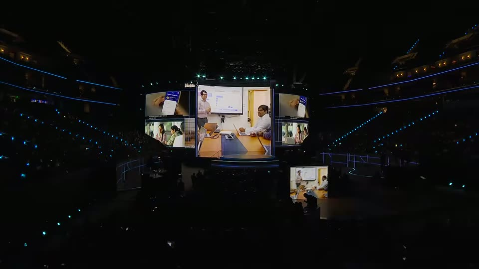<span class="play">▶ 00:00:40</span></a><figcaption>Opening film</figcaption></figure></div><div class="text"><a class="ts" href="https://www.youtube.com/watch?v=ZR4v1c4CClc&t=18s" target="_blank" rel="noopener">▶ 00:00:18</a><h3>Opening film</h3><p>"We are in a moment unlike any other." The film introduces the frontier ecosystem, where organizations own their intelligence and AI is "grounded in trust."</p></div></section><section class="sec"><div class="media"><figure class="lead"><a href="https://www.youtube.com/watch?v=ZR4v1c4CClc&t=105s" target="_blank" rel="noopener" aria-label="Watch from 00:01:45: Satya Nadella opens">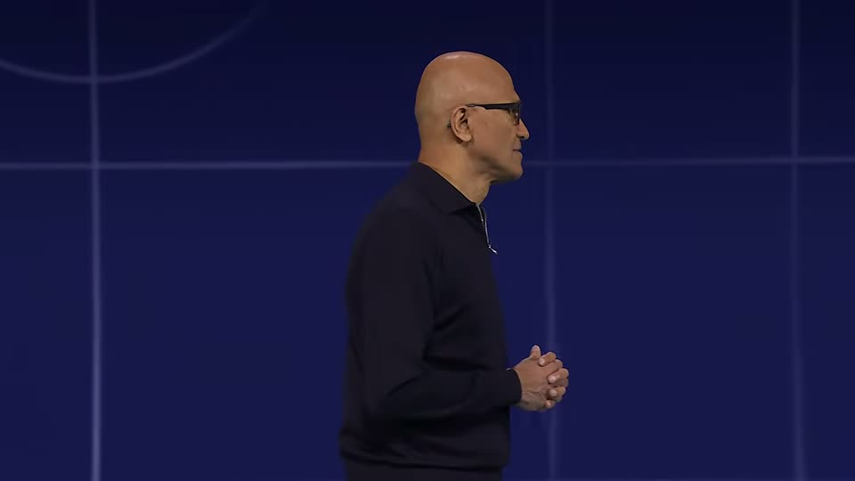<span class="play">▶ 00:01:45</span></a><figcaption>Satya Nadella opens</figcaption></figure></div><div class="text"><a class="ts" href="https://www.youtube.com/watch?v=ZR4v1c4CClc&t=78s" target="_blank" rel="noopener">▶ 00:01:18</a><h3>Welcome, and the outage</h3><ul>
<li>He frames the week around two questions: how to capitalize on exponentially growing capability, and how organizations build the capacity to deal with its consequences.</li>
<li>He refers to <strong>last week's outage</strong>: digital infrastructure is "the dial tone for the world." He says "we have work to do" on resilience and commits to learning and improving.</li>
</ul></div></section><section class="sec"><div class="media"><figure class="lead"><a href="https://www.youtube.com/watch?v=ZR4v1c4CClc&t=240s" target="_blank" rel="noopener" aria-label="Watch from 00:04:00: Building the frontier ecosystem">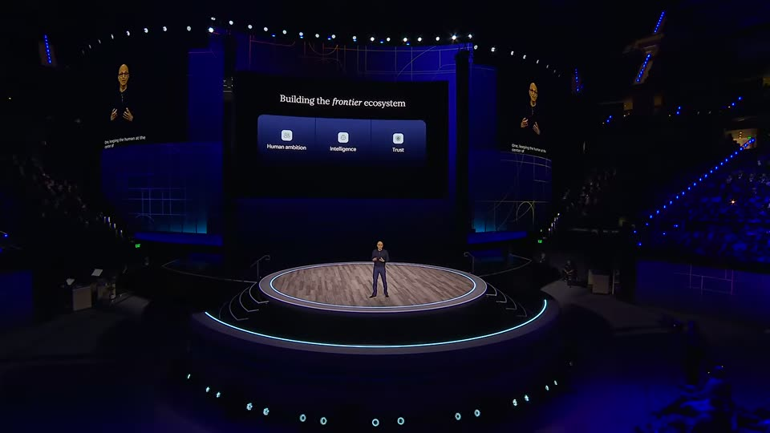<span class="play">▶ 00:04:00</span></a><figcaption>Building the frontier ecosystem</figcaption></figure></div><div class="text"><a class="ts" href="https://www.youtube.com/watch?v=ZR4v1c4CClc&t=191s" target="_blank" rel="noopener">▶ 00:03:11</a><h3>Mission and the three pillars</h3><ul>
<li><strong>Human at the center:</strong> software engineering is shifting "from building software artifacts to building software factories." Expertise and craft still matter, but where the leverage sits changes, and every function will go through the same shift.</li>
<li><strong>Intelligence:</strong> firms must build and own their own knowledge. Otherwise the economy "collapses into a couple of models."</li>
<li><strong>Trust</strong> <a class="ts" href="https://www.youtube.com/watch?v=ZR4v1c4CClc&amp;t=398s" target="_blank" rel="noopener">▶ 00:06:38</a>: alignment and mechanistic understanding of models are still elusive. So it is "an architectural imperative to <strong>separate the supply of intelligence from the authority over it</strong>."</li>
</ul></div></section><section class="sec"><div class="media"><figure class="lead"><a href="https://www.youtube.com/watch?v=ZR4v1c4CClc&t=425s" target="_blank" rel="noopener" aria-label="Watch from 00:07:05: Copilot">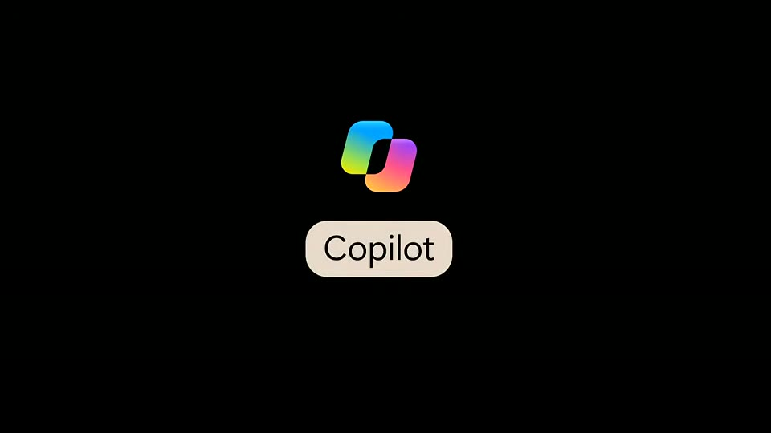<span class="play">▶ 00:07:05</span></a><figcaption>Copilot</figcaption></figure></div><div class="text"><a class="ts" href="https://www.youtube.com/watch?v=ZR4v1c4CClc&t=398s" target="_blank" rel="noopener">▶ 00:06:38</a><h3>Copilot, "the new operating system for work"</h3><ul>
<li>Chat, Cowork, Code and Copilot come together in one experience. "Apps are just plug-ins to Copilot," and all of Office is built in.</li>
<li>A model system matches the right model to each task. <em>Home</em> is the single starting point, and <em>Code</em> is "an infinite SaaS factory" for everyone, hosted inside your tenant.</li>
</ul></div></section><section class="sec"><div class="media"><figure class="lead"><a href="https://www.youtube.com/watch?v=ZR4v1c4CClc&t=535s" target="_blank" rel="noopener" aria-label="Watch from 00:08:55: Work IQ scale stats">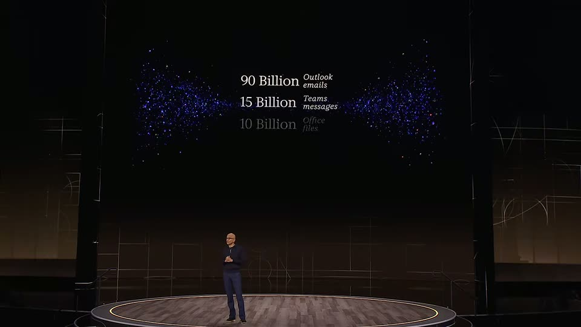<span class="play">▶ 00:08:55</span></a><figcaption>Work IQ scale stats</figcaption></figure></div><div class="text"><a class="ts" href="https://www.youtube.com/watch?v=ZR4v1c4CClc&t=500s" target="_blank" rel="noopener">▶ 00:08:20</a><h3>Autopilot, Work IQ, and general availability</h3><ul>
<li><strong>Autopilot</strong> is an autonomous agent that works around the clock wherever your team collaborates, like "an additional teammate."</li>
<li><strong>Work IQ</strong> is "perhaps the most important data asset you have": people, relationships, mail, chat and projects.</li>
<li><strong>Announcement:</strong> all of this is now <strong>broadly available</strong>.</li>
</ul></div></section><section class="sec"><div class="media"><figure class="lead"><a href="https://www.youtube.com/watch?v=ZR4v1c4CClc&t=590s" target="_blank" rel="noopener" aria-label="Watch from 00:09:50: New skills, connectors and plug-ins">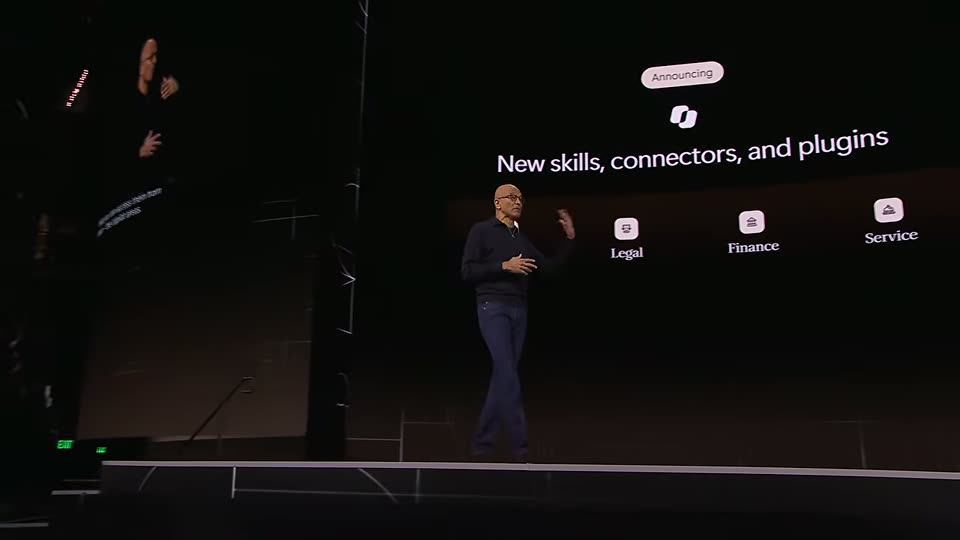<span class="play">▶ 00:09:50</span></a><figcaption>New skills, connectors and plug-ins</figcaption></figure></div><div class="text"><a class="ts" href="https://www.youtube.com/watch?v=ZR4v1c4CClc&t=563s" target="_blank" rel="noopener">▶ 00:09:23</a><h3>Role-based plug-ins: Dynamics 365 and Salesforce</h3><ul>
<li>Copilot extends to sales, legal, finance and service through skills, connectors and plug-ins.</li>
<li><strong>Business plug-ins for Dynamics 365</strong>, plus a <strong>partnership with Salesforce</strong> to bring Salesforce into Copilot.</li>
</ul></div></section><section class="sec"><div class="media"><figure class="lead"><a href="https://www.youtube.com/watch?v=ZR4v1c4CClc&t=635s" target="_blank" rel="noopener" aria-label="Watch from 00:10:35: Copilot across Excel, Word, PowerPoint, Discovery, Dragon, GitHub">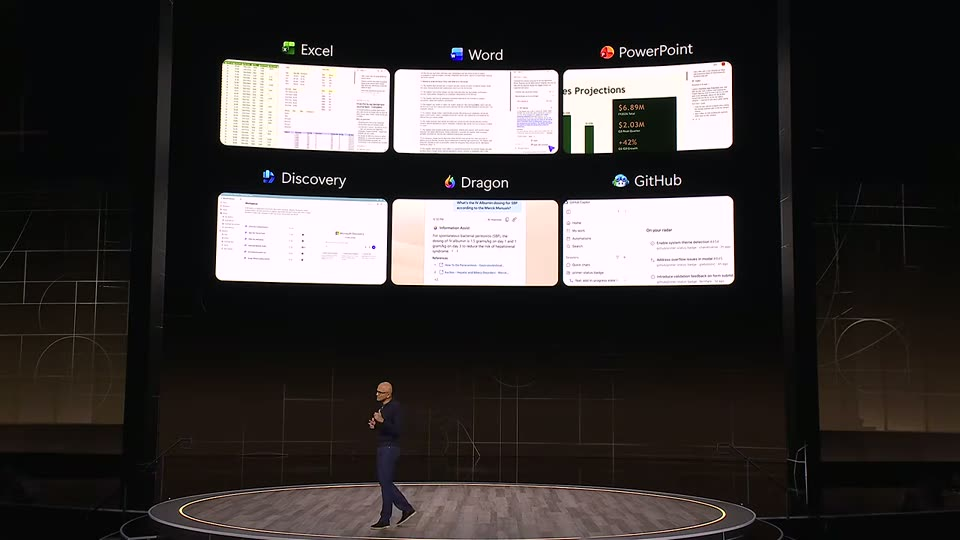<span class="play">▶ 00:10:35</span></a><figcaption>Copilot across Excel, Word, PowerPoint, Discovery, Dragon, GitHub</figcaption></figure></div><div class="text"><a class="ts" href="https://www.youtube.com/watch?v=ZR4v1c4CClc&t=598s" target="_blank" rel="noopener">▶ 00:09:58</a><h3>GitHub: goal-driven projects and Fusion</h3><ul>
<li>New GitHub capability: define a goal, connect one or more repos, and Copilot coordinates the work toward that goal.</li>
<li><strong>GitHub/Copilot Fusion</strong> orchestrates multiple models. It is said to rank <strong>#1 on Terminal Bench</strong>, about 5 points ahead, at less than half the cost.</li>
</ul></div></section><section class="sec"><div class="media"><figure class="lead"><a href="https://www.youtube.com/watch?v=ZR4v1c4CClc&t=735s" target="_blank" rel="noopener" aria-label="Watch from 00:12:15: Copilot Workspaces video">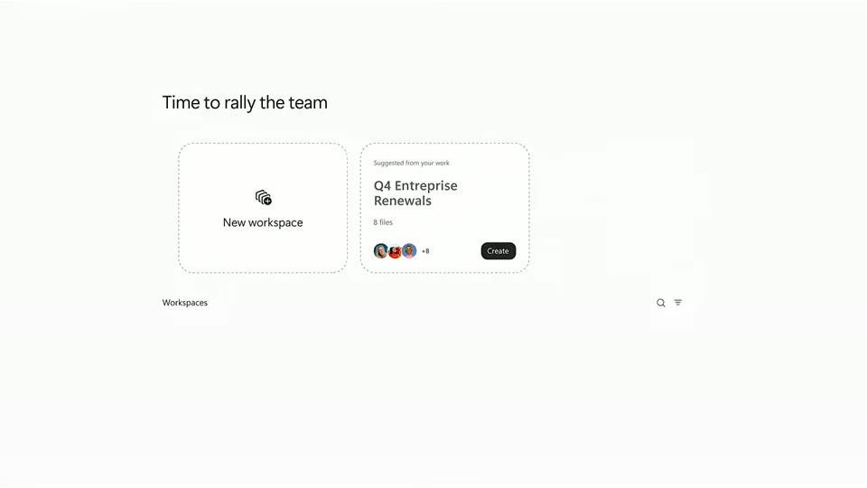<span class="play">▶ 00:12:15</span></a><figcaption>Copilot Workspaces video</figcaption></figure></div><div class="text"><a class="ts" href="https://www.youtube.com/watch?v=ZR4v1c4CClc&t=693s" target="_blank" rel="noopener">▶ 00:11:33</a><h3>Copilot Workspaces (multiplayer)</h3><p>Copilot moves from single player to multiplayer: people, their agents and other people work toward a common goal with shared context. Satya says it has changed his own working habits.</p></div></section><section class="sec"><div class="media"><figure class="lead"><a href="https://www.youtube.com/watch?v=ZR4v1c4CClc&t=850s" target="_blank" rel="noopener" aria-label="Watch from 00:14:10: Organizational intelligence">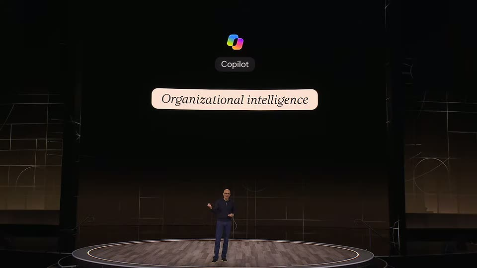<span class="play">▶ 00:14:10</span></a><figcaption>Organizational intelligence</figcaption></figure></div><div class="text"><a class="ts" href="https://www.youtube.com/watch?v=ZR4v1c4CClc&t=794s" target="_blank" rel="noopener">▶ 00:13:14</a><h3>Microsoft IQ: organizational intelligence</h3><ul>
<li>The system underneath Copilot becomes a first-class platform: <strong>Work IQ + Fabric IQ + Web IQ + third-party context</strong>, with <strong>hundreds of new connectors</strong>. It surfaces as shareable business plug-ins.</li>
<li>A multi-model system tunes the product, harness, tools and models "as one optimization" for the best economics.</li>
</ul></div></section><section class="sec"><div class="media"><figure class="lead"><a href="https://www.youtube.com/watch?v=ZR4v1c4CClc&t=980s" target="_blank" rel="noopener" aria-label="Watch from 00:16:20: Optimizing the cost-to-outcome frontier">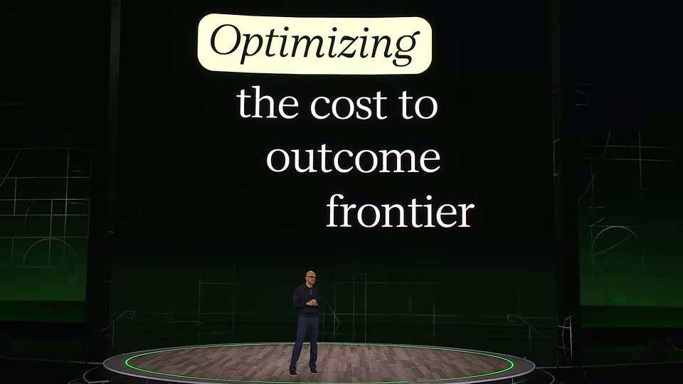<span class="play">▶ 00:16:20</span></a><figcaption>Optimizing the cost-to-outcome frontier</figcaption></figure></div><div class="text"><a class="ts" href="https://www.youtube.com/watch?v=ZR4v1c4CClc&t=950s" target="_blank" rel="noopener">▶ 00:15:50</a><h3>Decision models: MAI Decision 1.1 GA</h3><ul>
<li>A "new class" of <strong>decision models</strong> embeds intelligence in software, the way databases once did.</li>
<li><strong>Microsoft Decision 1.1 is GA</strong> <a class="ts" href="https://www.youtube.com/watch?v=ZR4v1c4CClc&amp;t=1013s" target="_blank" rel="noopener">▶ 00:16:53</a>. Over 4,000 customers use it: Epic for clinical and back-office decisions, Copilot's own mode/model/effort routing, and Xbox for feedback triage. It is "&gt;10x faster and 200x cheaper than an LLM."</li>
</ul></div></section><section class="sec"><div class="media"><figure class="lead"><a href="https://www.youtube.com/watch?v=ZR4v1c4CClc&t=1140s" target="_blank" rel="noopener" aria-label="Watch from 00:19:00: MAI model family">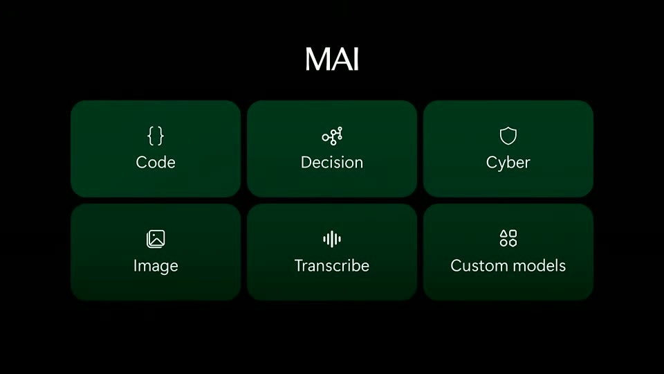<span class="play">▶ 00:19:00</span></a><figcaption>MAI model family</figcaption></figure></div><div class="text"><a class="ts" href="https://www.youtube.com/watch?v=ZR4v1c4CClc&t=1069s" target="_blank" rel="noopener">▶ 00:17:49</a><h3>Foundry models and MAI</h3><ul>
<li><strong>GPT-6.2</strong> is coming to Foundry, <strong>Claude 5.2</strong> arrived last week, and <strong>Meta's latest models</strong> are coming.</li>
<li>The MAI family is built to be compute-efficient in training and token-efficient in deployment. Requests are up 12x, and MAI Cyber powers 40%+ of Perception code scans.</li>
</ul></div></section><section class="sec"><div class="media"><figure class="lead"><a href="https://www.youtube.com/watch?v=ZR4v1c4CClc&t=1185s" target="_blank" rel="noopener" aria-label="Watch from 00:19:45: MAI Licensed Weights">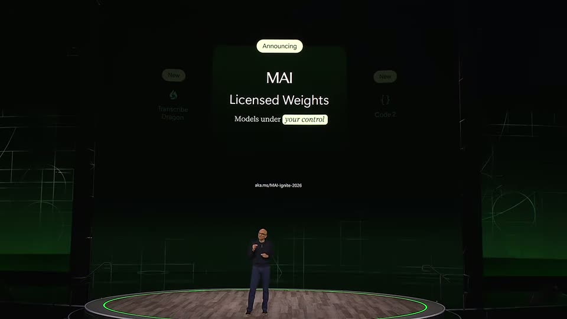<span class="play">▶ 00:19:45</span></a><figcaption>MAI Licensed Weights</figcaption></figure><figure class="extra"><a href="https://www.youtube.com/watch?v=ZR4v1c4CClc&t=1250s" target="_blank" rel="noopener" aria-label="Watch from 00:20:50: Code 2 Flash">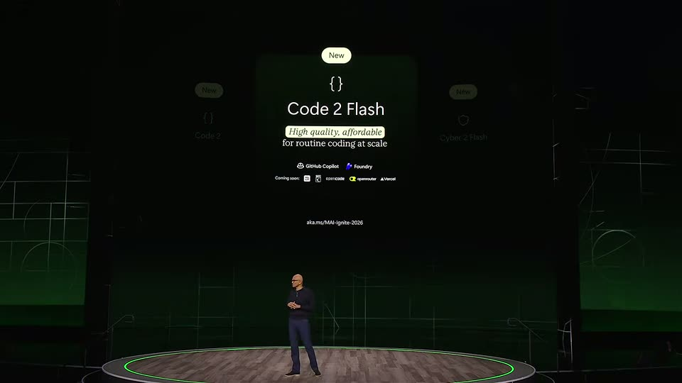<span class="play">▶ 00:20:50</span></a><figcaption>Code 2 Flash</figcaption></figure></div><div class="text"><a class="ts" href="https://www.youtube.com/watch?v=ZR4v1c4CClc&t=1175s" target="_blank" rel="noopener">▶ 00:19:35</a><h3>MAI licensed weights, Code 2 and Cyber Flash</h3><ul>
<li><strong>MAI licensed weights:</strong> trusted partners get access to Microsoft model weights.</li>
<li><strong>Code 2</strong> (flagship coding) and <strong>Code 2 Flash</strong> (fast, high-volume) <a class="ts" href="https://www.youtube.com/watch?v=ZR4v1c4CClc&amp;t=1200s" target="_blank" rel="noopener">▶ 00:20:00</a>, plus <strong>Cyber Flash</strong>.</li>
</ul></div></section><section class="sec"><div class="media"><figure class="lead"><a href="https://www.youtube.com/watch?v=ZR4v1c4CClc&t=1300s" target="_blank" rel="noopener" aria-label="Watch from 00:21:40: Foundry Hosted Agents — Evaluate, Optimize, Train">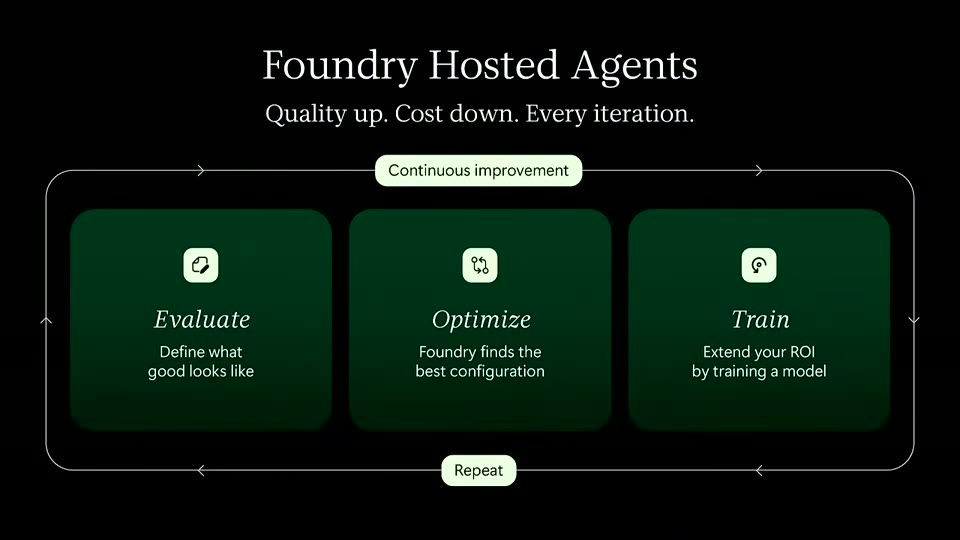<span class="play">▶ 00:21:40</span></a><figcaption>Foundry Hosted Agents — Evaluate, Optimize, Train</figcaption></figure></div><div class="text"><a class="ts" href="https://www.youtube.com/watch?v=ZR4v1c4CClc&t=1272s" target="_blank" rel="noopener">▶ 00:21:12</a><h3>Foundry Hosted Agents: a continuous-improvement loop</h3><p>The same managed agent harness that powers Copilot and GitHub Copilot is now available to customers. You define your own evals, and Foundry improves the agent and the model underneath it from production experience ("Evaluate → Optimize → Train").</p></div></section><section class="sec"><div class="media"><figure class="lead"><a href="https://www.youtube.com/watch?v=ZR4v1c4CClc&t=1380s" target="_blank" rel="noopener" aria-label="Watch from 00:23:00: Observability at every layer of the stack">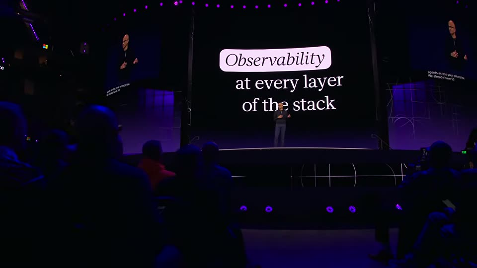<span class="play">▶ 00:23:00</span></a><figcaption>Observability at every layer of the stack</figcaption></figure></div><div class="text"><a class="ts" href="https://www.youtube.com/watch?v=ZR4v1c4CClc&t=1310s" target="_blank" rel="noopener">▶ 00:21:50</a><h3>Trust: Agent 365 and Business Analytics</h3><ul>
<li>Agent 365 is the control plane for agents. <strong>15 million agents</strong> are already in it.</li>
<li><strong>New: Agent 365 Business Analytics</strong> <a class="ts" href="https://www.youtube.com/watch?v=ZR4v1c4CClc&amp;t=1369s" target="_blank" rel="noopener">▶ 00:22:49</a>, "an ERP system of AI usage" that links spend to outcomes and ROI.</li>
</ul></div></section><section class="sec"><div class="media"><figure class="lead"><a href="https://www.youtube.com/watch?v=ZR4v1c4CClc&t=1530s" target="_blank" rel="noopener" aria-label="Watch from 00:25:30: Perception: Red team, Blue team, Green team">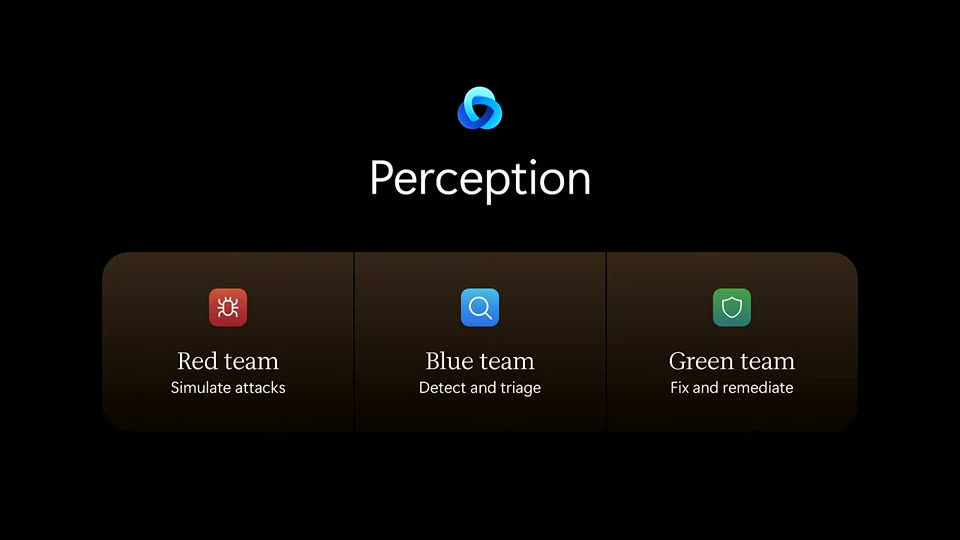<span class="play">▶ 00:25:30</span></a><figcaption>Perception: Red team, Blue team, Green team</figcaption></figure></div><div class="text"><a class="ts" href="https://www.youtube.com/watch?v=ZR4v1c4CClc&t=1397s" target="_blank" rel="noopener">▶ 00:23:17</a><h3>Microsoft Perception (security) GA</h3><ul>
<li>Security spans Agent 365 identity, containers, Purview and Defender. In one example, Defender's automatic attack disruption contained an autonomous AI attack framework.</li>
<li><strong>Perception</strong> <a class="ts" href="https://www.youtube.com/watch?v=ZR4v1c4CClc&amp;t=1512s" target="_blank" rel="noopener">▶ 00:25:12</a> has red team agents (simulate attacks), blue team agents (detect) and green team agents (fix), which you combine into playbooks. <strong>It is now GA.</strong></li>
</ul></div></section><section class="sec"><div class="media"><figure class="lead"><a href="https://www.youtube.com/watch?v=ZR4v1c4CClc&t=1670s" target="_blank" rel="noopener" aria-label="Watch from 00:27:50: Transparency initiative">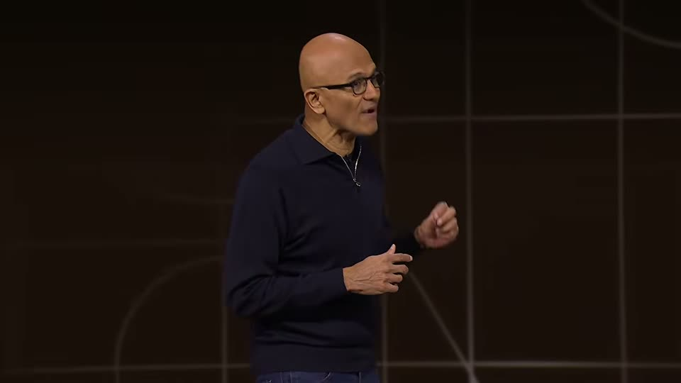<span class="play">▶ 00:27:50</span></a><figcaption>Transparency initiative</figcaption></figure></div><div class="text"><a class="ts" href="https://www.youtube.com/watch?v=ZR4v1c4CClc&t=1598s" target="_blank" rel="noopener">▶ 00:26:38</a><h3>Microsoft Transparency Initiative</h3><ul>
<li>You can't see inside models, and a model's account of itself, or one model monitoring another, isn't independent evidence.</li>
<li>There are three parts: expand work on agent standards, an ecosystem approach (40 organizations already involved), and applying the standards across Microsoft's own products.</li>
</ul></div></section><section class="sec"><div class="media"><figure class="lead"><a href="https://www.youtube.com/watch?v=ZR4v1c4CClc&t=1800s" target="_blank" rel="noopener" aria-label="Watch from 00:30:00: GitHub scale">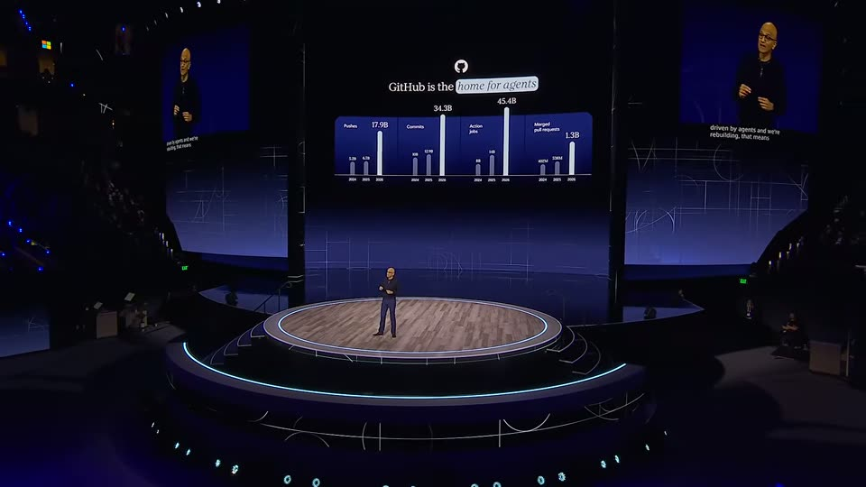<span class="play">▶ 00:30:00</span></a><figcaption>GitHub scale</figcaption></figure><figure class="extra"><a href="https://www.youtube.com/watch?v=ZR4v1c4CClc&t=1870s" target="_blank" rel="noopener" aria-label="Watch from 00:31:10: Community-first AI infrastructure plan">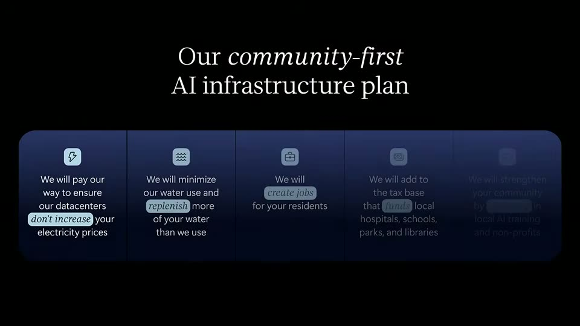<span class="play">▶ 00:31:10</span></a><figcaption>Community-first AI infrastructure plan</figcaption></figure></div><div class="text"><a class="ts" href="https://www.youtube.com/watch?v=ZR4v1c4CClc&t=1704s" target="_blank" rel="noopener">▶ 00:28:24</a><h3>Infrastructure for agentic workloads</h3><ul>
<li>GitHub was re-architected for agent-driven load (storage and compute decoupled). In a test, 5,000 agents on one repo sustained <strong>7,200 writes/sec, 180x today's throughput</strong> <a class="ts" href="https://www.youtube.com/watch?v=ZR4v1c4CClc&amp;t=1809s" target="_blank" rel="noopener">▶ 00:30:09</a>.</li>
<li>500+ datacenters and 80 Azure regions, "community-first" AI infrastructure, 100% renewable matching, 92% server reuse/recycling, and sovereign cloud options.</li>
</ul></div></section><section class="sec"><div class="media"><figure class="lead"><a href="https://www.youtube.com/watch?v=ZR4v1c4CClc&t=1960s" target="_blank" rel="noopener" aria-label="Watch from 00:32:40: Windows and edge">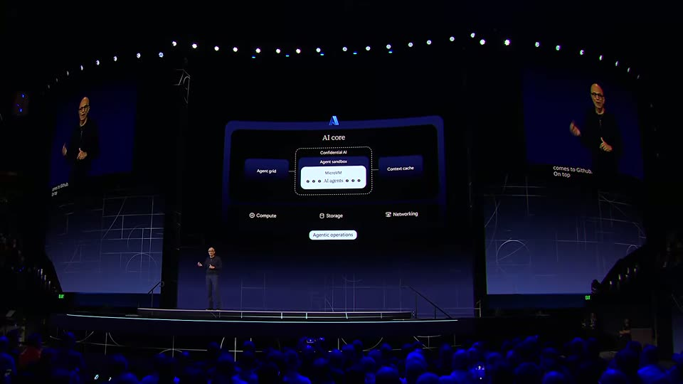<span class="play">▶ 00:32:40</span></a><figcaption>Windows and edge</figcaption></figure></div><div class="text"><a class="ts" href="https://www.youtube.com/watch?v=ZR4v1c4CClc&t=1912s" target="_blank" rel="noopener">▶ 00:31:52</a><h3>Windows at the edge and agent-scale primitives</h3><p>Windows delivers "unmetered intelligence" from local models ("last year's frontier models on your laptop"). Sub-second sandboxed micro-VMs, an <strong>agent grid</strong> for identity, policy and networking controls, and AKS/Foundry provide the agentic primitives.</p></div></section><section class="sec"><div class="media"><figure class="lead"><a href="https://www.youtube.com/watch?v=ZR4v1c4CClc&t=2070s" target="_blank" rel="noopener" aria-label="Watch from 00:34:30: Fabric HorizonDB">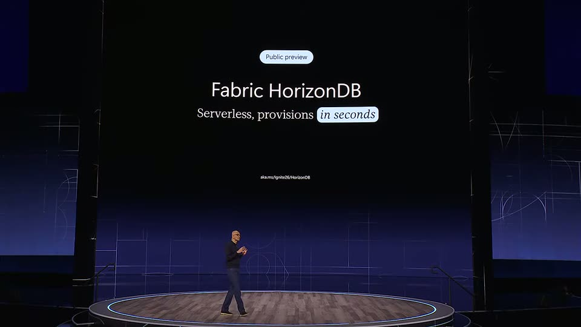<span class="play">▶ 00:34:30</span></a><figcaption>Fabric HorizonDB</figcaption></figure><figure class="extra"><a href="https://www.youtube.com/watch?v=ZR4v1c4CClc&t=2100s" target="_blank" rel="noopener" aria-label="Watch from 00:35:00: Real-time dashboard">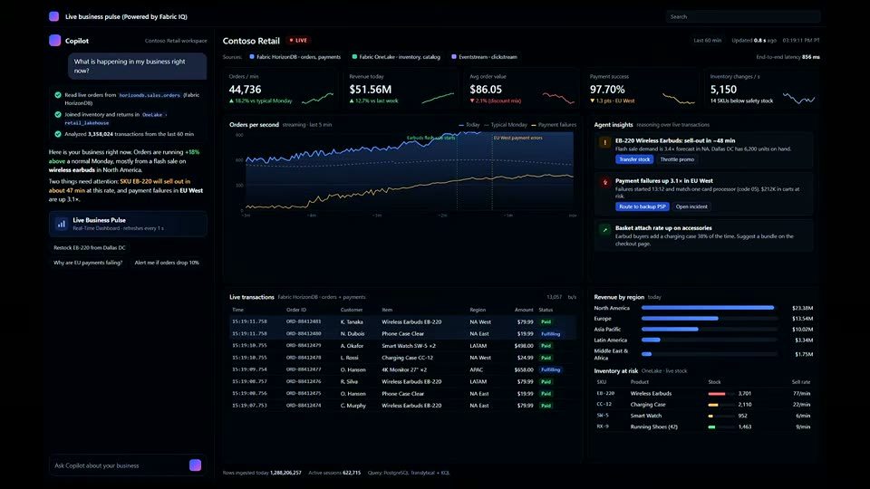<span class="play">▶ 00:35:00</span></a><figcaption>Real-time dashboard</figcaption></figure></div><div class="text"><a class="ts" href="https://www.youtube.com/watch?v=ZR4v1c4CClc&t=2018s" target="_blank" rel="noopener">▶ 00:33:38</a><h3>Azure HorizonDB GA, and HorizonDB in Fabric</h3><ul>
<li><strong>HorizonDB</strong> is a distributed managed SQL database with ultra-low latency, built-in search and AI, and "8x faster." <strong>It is GA.</strong></li>
<li><strong>HorizonDB is coming into Fabric</strong>, unifying transactional and analytical data. Satya calls it the work of 25 years of his life. Copilot can build a live dashboard of "what is happening in my business right now."</li>
</ul></div></section><section class="sec"><div class="media"><figure class="lead"><a href="https://www.youtube.com/watch?v=ZR4v1c4CClc&t=2160s" target="_blank" rel="noopener" aria-label="Watch from 00:36:00: Heterogeneous fleet: NVIDIA, Intel, AMD, Arm">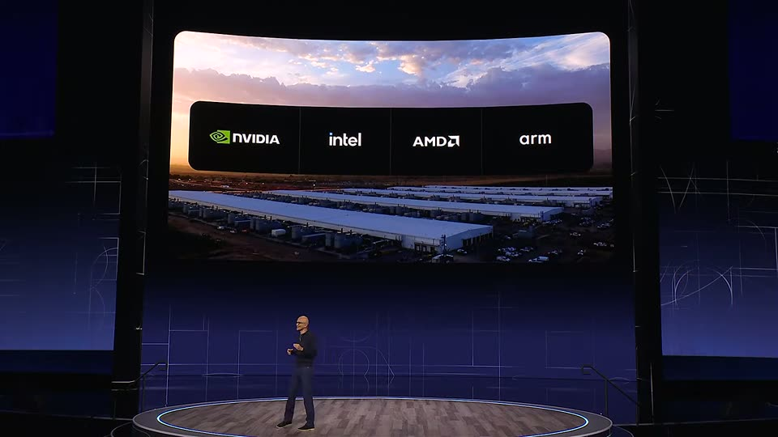<span class="play">▶ 00:36:00</span></a><figcaption>Heterogeneous fleet: NVIDIA, Intel, AMD, Arm</figcaption></figure></div><div class="text"><a class="ts" href="https://www.youtube.com/watch?v=ZR4v1c4CClc&t=2137s" target="_blank" rel="noopener">▶ 00:35:37</a><h3>Silicon and close</h3><p>A heterogeneous fleet plus Microsoft's own silicon: <strong>Maia 300</strong> (40% more tokens per watt), Azure Boost and Integrated HSM. "We are entering an era of ubiquitous intelligence." He then hands over to Judson <a class="ts" href="https://www.youtube.com/watch?v=ZR4v1c4CClc&amp;t=2242s" target="_blank" rel="noopener">▶ 00:37:22</a>.</p></div></section></div>
<div class="part" id="p2"><header class="part-head"><p class="eyebrow">[ PART 2 ]</p><h2>Judson Althoff: Human ambition</h2></header><section class="sec"><div class="media"><figure class="lead"><a href="https://www.youtube.com/watch?v=ZR4v1c4CClc&t=2370s" target="_blank" rel="noopener" aria-label="Watch from 00:39:30: Today feed">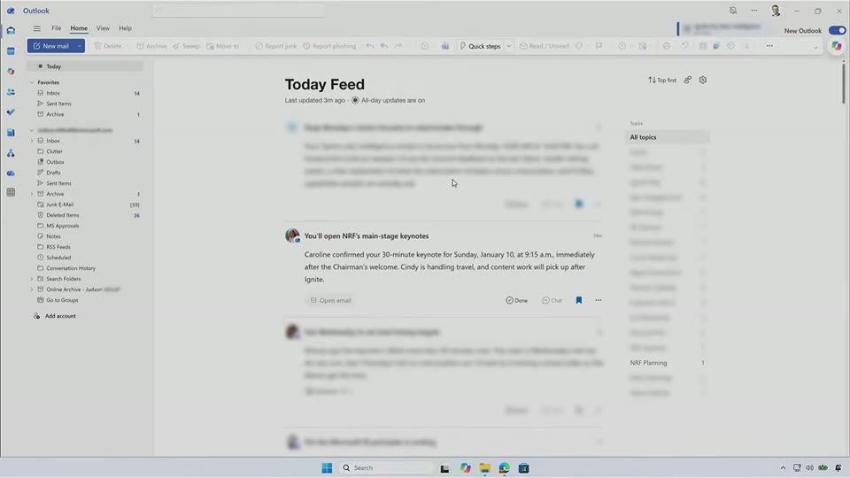<span class="play">▶ 00:39:30</span></a><figcaption>Today feed</figcaption></figure><figure class="extra"><a href="https://www.youtube.com/watch?v=ZR4v1c4CClc&t=2570s" target="_blank" rel="noopener" aria-label="Watch from 00:42:50: Generated deck and outline">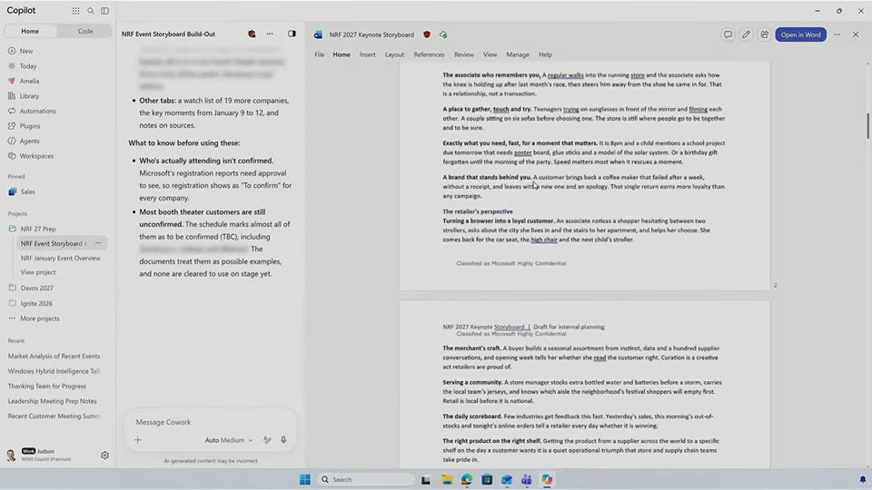<span class="play">▶ 00:42:50</span></a><figcaption>Generated deck and outline</figcaption></figure></div><div class="text"><a class="ts" href="https://www.youtube.com/watch?v=ZR4v1c4CClc&t=2263s" target="_blank" rel="noopener">▶ 00:37:43</a><h3>Judson's own Sunday in Copilot</h3><ul>
<li>"Anything you can do in Claude or ChatGPT you can do better with Copilot and for less."</li>
<li>Real environment, not a demo. <strong>Today</strong> surfaces a note that he has the lead keynote at NRF in January. A <strong>Project</strong> plus <strong>Cowork</strong> scans Work IQ, web and local files ("hybrid intelligence") and finds 7 NRF themes.</li>
<li>Full Office runs inside Copilot <a class="ts" href="https://www.youtube.com/watch?v=ZR4v1c4CClc&amp;t=2462s" target="_blank" rel="noopener">▶ 00:41:02</a>: outline in Word, deck in PowerPoint, customer tracker in Excel, with sensitivity labels and track changes.</li>
</ul></div></section><section class="sec"><div class="media"><figure class="lead"><a href="https://www.youtube.com/watch?v=ZR4v1c4CClc&t=2720s" target="_blank" rel="noopener" aria-label="Watch from 00:45:20: Autopilot in Teams">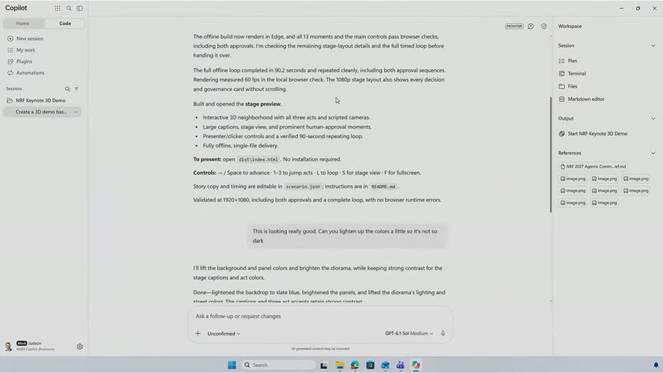<span class="play">▶ 00:45:20</span></a><figcaption>Autopilot in Teams</figcaption></figure></div><div class="text"><a class="ts" href="https://www.youtube.com/watch?v=ZR4v1c4CClc&t=2661s" target="_blank" rel="noopener">▶ 00:44:21</a><h3>Autopilot "Amelia", Workspaces and a 3-D demo</h3><ul>
<li><strong>Autopilot "Amelia"</strong> sets up its own routines: it keeps the tracker current, attends product meetings and posts to the Teams planning channel. A Workspace maps to that channel.</li>
<li>Code turns a markdown file into a 3-D demo ("real code behind it").</li>
<li><strong>Cost</strong> <a class="ts" href="https://www.youtube.com/watch?v=ZR4v1c4CClc&amp;t=2755s" target="_blank" rel="noopener">▶ 00:45:55</a>: about <strong>10,000 credits, roughly $100</strong>, and two hours of his time.</li>
</ul></div></section><section class="sec"><div class="media"><figure class="lead"><a href="https://www.youtube.com/watch?v=ZR4v1c4CClc&t=2860s" target="_blank" rel="noopener" aria-label="Watch from 00:47:40: Home">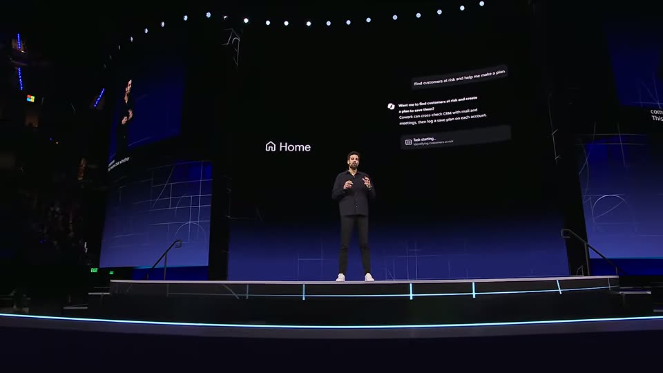<span class="play">▶ 00:47:40</span></a><figcaption>Home</figcaption></figure></div><div class="text"><a class="ts" href="https://www.youtube.com/watch?v=ZR4v1c4CClc&t=2815s" target="_blank" rel="noopener">▶ 00:46:55</a><h3>Jacob Andreou (EVP Copilot): Home, Office, Code</h3><ul>
<li><strong>Home</strong> puts chat and Cowork in a single composer.</li>
<li><strong>Full Word, Excel and PowerPoint in Copilot</strong>, compared with the "simplified viewers" from Anthropic and OpenAI. Files stay in your tenant with labels intact, and Office in Copilot is <strong>included in the subscription</strong> <a class="ts" href="https://www.youtube.com/watch?v=ZR4v1c4CClc&amp;t=2914s" target="_blank" rel="noopener">▶ 00:48:34</a>.</li>
<li><strong>Code</strong> builds sandboxed apps, hosted in-tenant and as easy to share as a Word doc.</li>
</ul></div></section><section class="sec"><div class="media"><figure class="lead"><a href="https://www.youtube.com/watch?v=ZR4v1c4CClc&t=3040s" target="_blank" rel="noopener" aria-label="Watch from 00:50:40: Chevron Cowork prompt">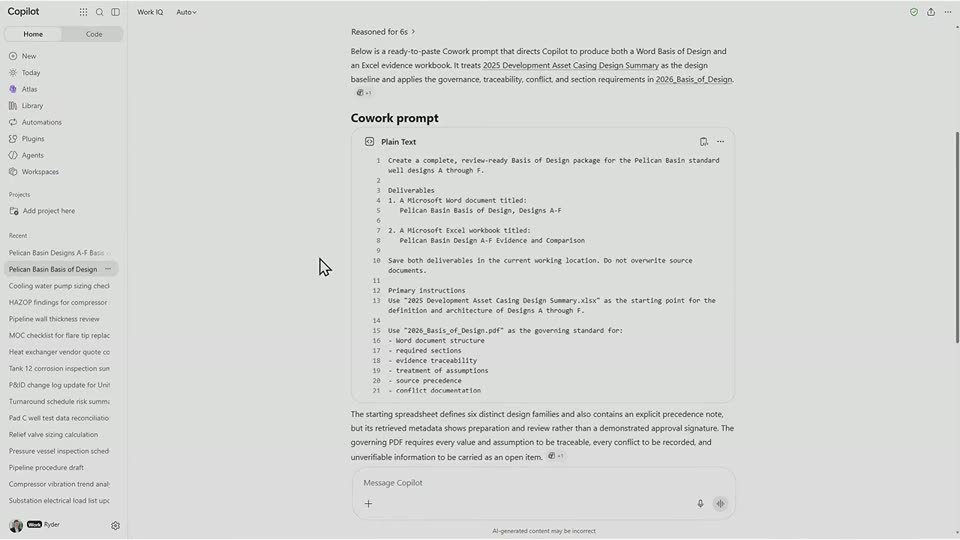<span class="play">▶ 00:50:40</span></a><figcaption>Chevron Cowork prompt</figcaption></figure></div><div class="text"><a class="ts" href="https://www.youtube.com/watch?v=ZR4v1c4CClc&t=2983s" target="_blank" rel="noopener">▶ 00:49:43</a><h3>Chevron: engineering "basis of design"</h3><ul>
<li>Chat writes a 300-line Cowork prompt. Cowork goes through hundreds of engineering files, and <strong>Fabric IQ</strong> enriches the result with thousands of company designs, including data from a recently acquired company.</li>
<li>The result becomes a <strong>reusable skill</strong> for every engineer. <strong>Cost</strong> <a class="ts" href="https://www.youtube.com/watch?v=ZR4v1c4CClc&amp;t=3225s" target="_blank" rel="noopener">▶ 00:53:45</a>: about 4,500 credits (~$45), and the work went "from months to minutes."</li>
</ul></div></section><section class="sec"><div class="media"><figure class="lead"><a href="https://www.youtube.com/watch?v=ZR4v1c4CClc&t=3290s" target="_blank" rel="noopener" aria-label="Watch from 00:54:50: Agent 365 spend dashboard">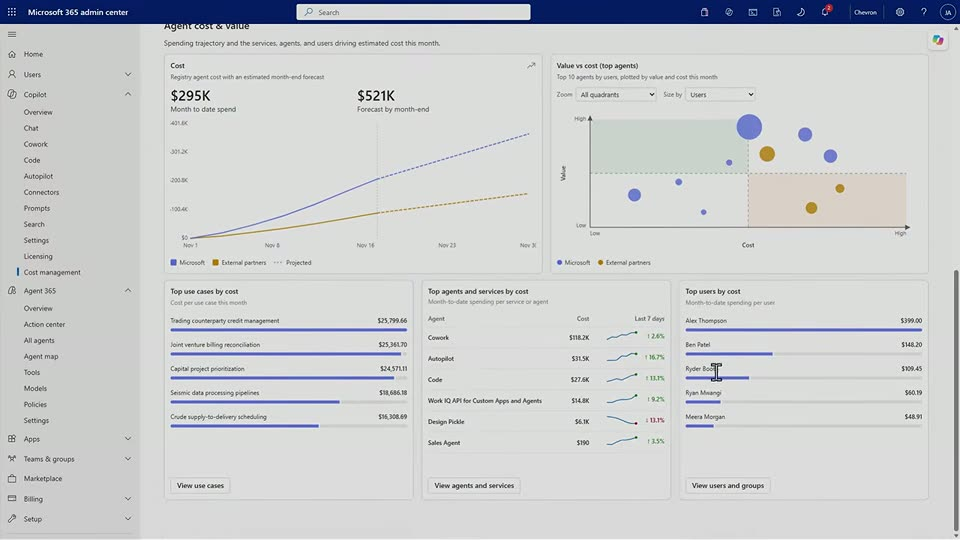<span class="play">▶ 00:54:50</span></a><figcaption>Agent 365 spend dashboard</figcaption></figure></div><div class="text"><a class="ts" href="https://www.youtube.com/watch?v=ZR4v1c4CClc&t=3247s" target="_blank" rel="noopener">▶ 00:54:07</a><h3>Agent 365: IT view of AI spend</h3><p>IT sees spend per service, agent, model and user, <strong>sets spend limits before Cowork can be used</strong>, gets alerts, and controls which models are allowed.</p></div></section><section class="sec"><div class="media"><figure class="lead"><a href="https://www.youtube.com/watch?v=ZR4v1c4CClc&t=3380s" target="_blank" rel="noopener" aria-label="Watch from 00:56:20: Copilot cost model">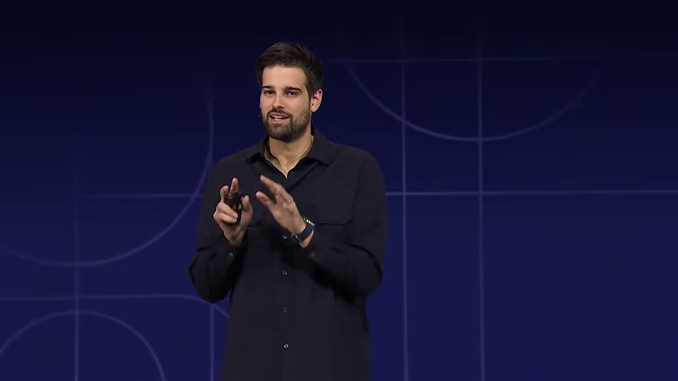<span class="play">▶ 00:56:20</span></a><figcaption>Copilot cost model</figcaption></figure></div><div class="text"><a class="ts" href="https://www.youtube.com/watch?v=ZR4v1c4CClc&t=3346s" target="_blank" rel="noopener">▶ 00:55:46</a><h3>Why Copilot keeps costs down</h3><p>Jacob gives three reasons: the subscription (everyday AI with no metered charges), <strong>autorouting</strong> (picks mode, model and effort), and <strong>Work IQ grounding</strong> (gets it right the first time).</p></div></section><section class="sec"><div class="media"><figure class="lead"><a href="https://www.youtube.com/watch?v=ZR4v1c4CClc&t=3490s" target="_blank" rel="noopener" aria-label="Watch from 00:58:10: Today">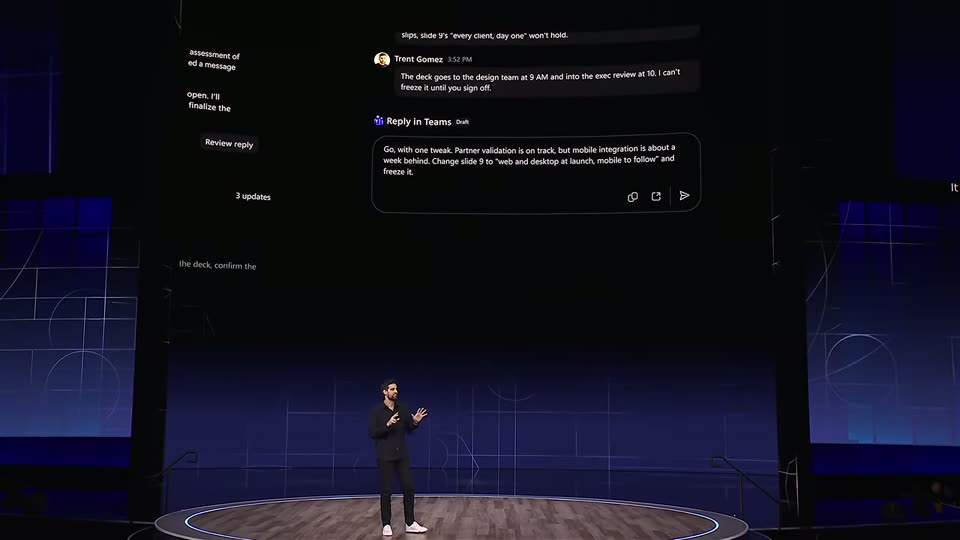<span class="play">▶ 00:58:10</span></a><figcaption>Today</figcaption></figure></div><div class="text"><a class="ts" href="https://www.youtube.com/watch?v=ZR4v1c4CClc&t=3444s" target="_blank" rel="noopener">▶ 00:57:24</a><h3>Coming in the next weeks: Today, Autopilot, Workspaces, plug-ins</h3><ul>
<li><strong>Today</strong> is a proactive command center that drafts replies and proposes schedule changes, all waiting for your approval.</li>
<li><strong>Autopilot</strong> is the "first enterprise-grade long-running agent." It has its own memory, email and computer, so it can use legacy apps.</li>
<li><strong>Workspaces</strong> bring people and agents together around shared context <a class="ts" href="https://www.youtube.com/watch?v=ZR4v1c4CClc&amp;t=3552s" target="_blank" rel="noopener">▶ 00:59:12</a>. <strong>Plug-ins</strong> are approved by IT once and then work across chat, Code and Autopilot.</li>
</ul></div></section><section class="sec"><div class="media"><figure class="lead"><a href="https://www.youtube.com/watch?v=ZR4v1c4CClc&t=3720s" target="_blank" rel="noopener" aria-label="Watch from 01:02:00: Cowork pipeline analysis">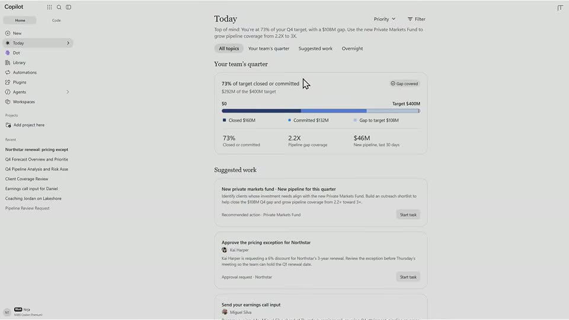<span class="play">▶ 01:02:00</span></a><figcaption>Cowork pipeline analysis</figcaption></figure><figure class="extra"><a href="https://www.youtube.com/watch?v=ZR4v1c4CClc&t=3850s" target="_blank" rel="noopener" aria-label="Watch from 01:04:10: Autopilot routines">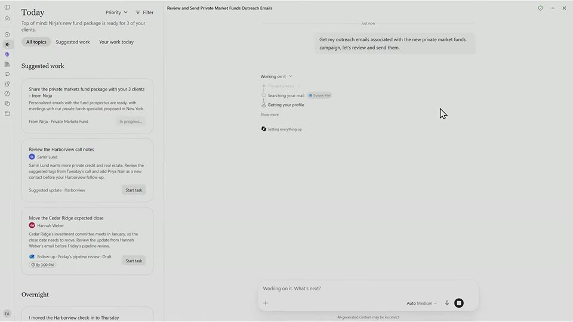<span class="play">▶ 01:04:10</span></a><figcaption>Autopilot routines</figcaption></figure></div><div class="text"><a class="ts" href="https://www.youtube.com/watch?v=ZR4v1c4CClc&t=3628s" target="_blank" rel="noopener">▶ 01:00:28</a><h3>BlackRock: sales with Dynamics 365 plug-ins</h3><ul>
<li>A sales lead's Today view shows 73% of goal and 2.2x pipeline coverage against 3x needed. Cowork identifies $110M of likely commitments and builds client packages that relationship managers approve.</li>
<li>The relationship manager's Autopilot <a class="ts" href="https://www.youtube.com/watch?v=ZR4v1c4CClc&amp;t=3825s" target="_blank" rel="noopener">▶ 01:03:45</a> runs daily checks and a Monday intel brief. "Nothing goes out to my clients without my approval."</li>
<li><strong>Two weeks later</strong> <a class="ts" href="https://www.youtube.com/watch?v=ZR4v1c4CClc&amp;t=3974s" target="_blank" rel="noopener">▶ 01:06:14</a>: 73% → 81% of goal, with $59M of new pipeline.</li>
</ul></div></section><section class="sec"><div class="media"><figure class="lead"><a href="https://www.youtube.com/watch?v=ZR4v1c4CClc&t=4120s" target="_blank" rel="noopener" aria-label="Watch from 01:08:40: Rohan Kumar, Salesforce"><span class="play">▶ 01:08:40</span></a><figcaption>Rohan Kumar, Salesforce</figcaption></figure></div><div class="text"><a class="ts" href="https://www.youtube.com/watch?v=ZR4v1c4CClc&t=4021s" target="_blank" rel="noopener">▶ 01:07:01</a><h3>Salesforce: Copilotforce</h3><ul>
<li>Three announcements: a <strong>Salesforce sales plug-in for Copilot</strong>, <strong>Salesforce in Teams</strong>, and <strong>Data 360 ↔ Fabric zero-copy</strong>.</li>
<li><strong>Rohan Kumar</strong> (ex-Microsoft, now Salesforce) <a class="ts" href="https://www.youtube.com/watch?v=ZR4v1c4CClc&amp;t=4082s" target="_blank" rel="noopener">▶ 01:08:02</a> introduces <strong>Copilotforce</strong>, which brings Salesforce into M365 Copilot and Teams with Salesforce permissions intact.</li>
</ul></div></section><section class="sec"><div class="media"><figure class="lead"><a href="https://www.youtube.com/watch?v=ZR4v1c4CClc&t=4300s" target="_blank" rel="noopener" aria-label="Watch from 01:11:40: Copilotforce in Teams">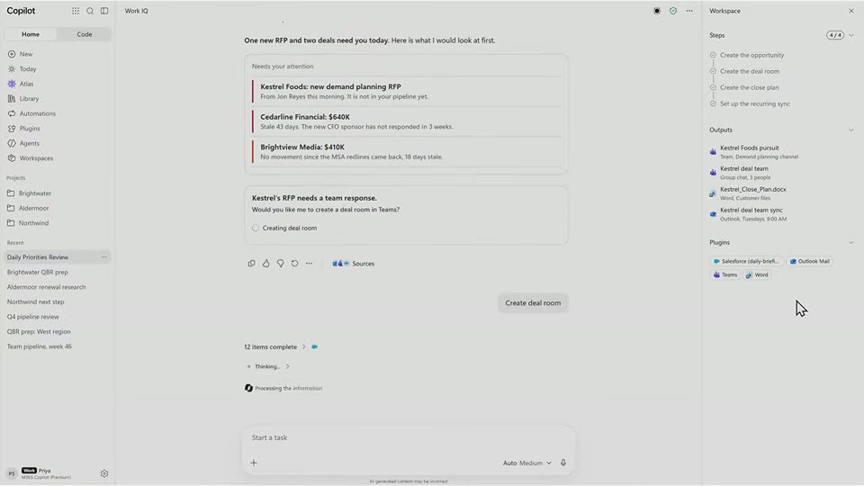<span class="play">▶ 01:11:40</span></a><figcaption>Copilotforce in Teams</figcaption></figure></div><div class="text"><a class="ts" href="https://www.youtube.com/watch?v=ZR4v1c4CClc&t=4232s" target="_blank" rel="noopener">▶ 01:10:32</a><h3>Accenture: Copilotforce in practice</h3><p>800,000 people use Teams at Accenture. A seller's Cowork briefing comes from the Salesforce pipeline, an RFP pursuit is set up in one tap, and Salesforce updates are proposed from chats and emails. The manager runs a pipeline-review skill (38+ Salesforce skills are available in Copilot) <a class="ts" href="https://www.youtube.com/watch?v=ZR4v1c4CClc&amp;t=4346s" target="_blank" rel="noopener">▶ 01:12:26</a>.</p></div></section></div>
<div class="part" id="p3"><header class="part-head"><p class="eyebrow">[ PART 3 ]</p><h2>Intelligence</h2></header><section class="sec"><div class="media"><figure class="lead"><a href="https://www.youtube.com/watch?v=ZR4v1c4CClc&t=4510s" target="_blank" rel="noopener" aria-label="Watch from 01:15:10: Unilever claims agent">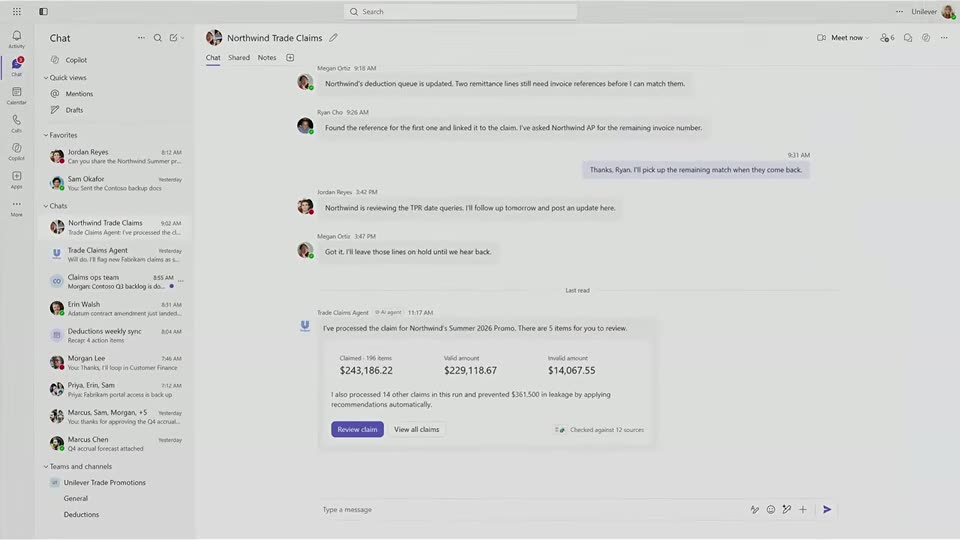<span class="play">▶ 01:15:10</span></a><figcaption>Unilever claims agent</figcaption></figure></div><div class="text"><a class="ts" href="https://www.youtube.com/watch?v=ZR4v1c4CClc&t=4406s" target="_blank" rel="noopener">▶ 01:13:26</a><h3>Unilever IQ</h3><ul>
<li>"Intelligence: not artificial, yours." Work IQ, Foundry IQ and Fabric IQ launched last year.</li>
<li>Unilever handles 3.7B consumers a day, 20M orders and 5M claims a year <a class="ts" href="https://www.youtube.com/watch?v=ZR4v1c4CClc&amp;t=4461s" target="_blank" rel="noopener">▶ 01:14:21</a>. A claims agent catches a $2,000 discrepancy on a single line, finds similar past claims and the people behind them, and learns from the account lead's judgment. That protects about $12,000 on one claim.</li>
</ul></div></section><section class="sec"><div class="media"><figure class="lead"><a href="https://www.youtube.com/watch?v=ZR4v1c4CClc&t=4740s" target="_blank" rel="noopener" aria-label="Watch from 01:19:00: Microsoft IQ">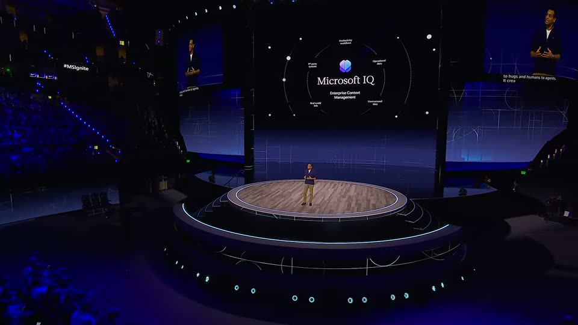<span class="play">▶ 01:19:00</span></a><figcaption>Microsoft IQ</figcaption></figure><figure class="extra"><a href="https://www.youtube.com/watch?v=ZR4v1c4CClc&t=4930s" target="_blank" rel="noopener" aria-label="Watch from 01:22:10: Legal &amp; Compliance context hierarchy">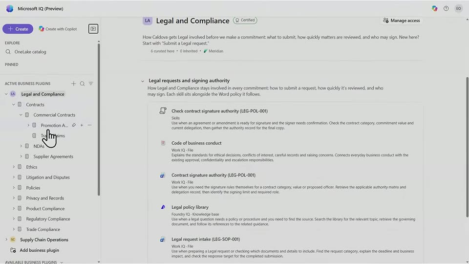<span class="play">▶ 01:22:10</span></a><figcaption>Legal &amp; Compliance context hierarchy</figcaption></figure></div><div class="text"><a class="ts" href="https://www.youtube.com/watch?v=ZR4v1c4CClc&t=4670s" target="_blank" rel="noopener">▶ 01:17:50</a><h3>Microsoft IQ launch: Arun Ulag</h3><ul>
<li>An "enterprise context management system" that yields durable, governed business plug-ins.</li>
<li>Work IQ (collaboration), Fabric IQ (metrics and semantics, including AWS and Snowflake), Foundry IQ (knowledge bases) and Web IQ, with <strong>350+ connectors</strong>. It is open, so it also works in ChatGPT and Claude <a class="ts" href="https://www.youtube.com/watch?v=ZR4v1c4CClc&amp;t=4804s" target="_blank" rel="noopener">▶ 01:20:04</a>. "Your IQ stays yours."</li>
<li>Demo <a class="ts" href="https://www.youtube.com/watch?v=ZR4v1c4CClc&amp;t=4878s" target="_blank" rel="noopener">▶ 01:21:18</a>: hierarchical context (company → legal → contracts → claims). It is certified by IT as ground truth and published as a plug-in. Agents load only what they need.</li>
</ul></div></section><section class="sec"><div class="media"><figure class="lead"><a href="https://www.youtube.com/watch?v=ZR4v1c4CClc&t=5140s" target="_blank" rel="noopener" aria-label="Watch from 01:25:40: 11,000+ Foundry models">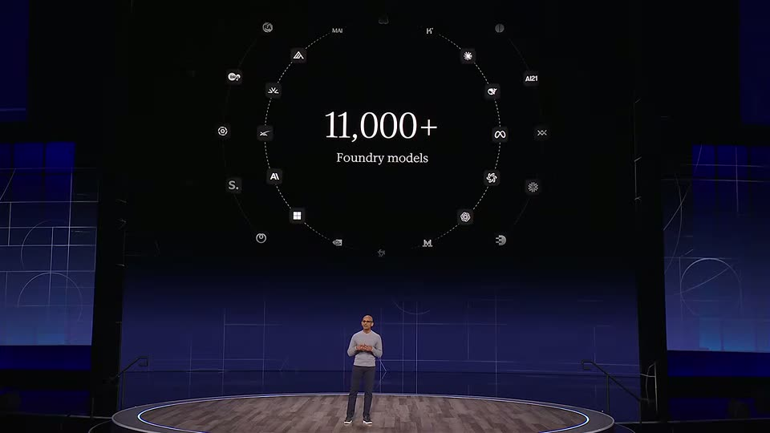<span class="play">▶ 01:25:40</span></a><figcaption>11,000+ Foundry models</figcaption></figure></div><div class="text"><a class="ts" href="https://www.youtube.com/watch?v=ZR4v1c4CClc&t=5076s" target="_blank" rel="noopener">▶ 01:24:36</a><h3>Foundry: models, router and the improvement loop</h3><ul>
<li><strong>11,000+ models</strong>. The <strong>model router</strong> sends simple requests to small models and complex ones to frontier models, at up to <strong>65% cheaper</strong>.</li>
<li>Agents improve with use. Foundry finds and tests improvements and shows the quality, speed and cost trade-offs, all the way up to training your own model <a class="ts" href="https://www.youtube.com/watch?v=ZR4v1c4CClc&amp;t=5171s" target="_blank" rel="noopener">▶ 01:26:11</a>.</li>
</ul></div></section><section class="sec"><div class="media"><figure class="lead"><a href="https://www.youtube.com/watch?v=ZR4v1c4CClc&t=5460s" target="_blank" rel="noopener" aria-label="Watch from 01:31:00: Alaska Airlines demo">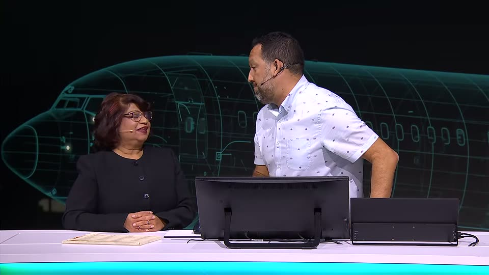<span class="play">▶ 01:31:00</span></a><figcaption>Alaska Airlines demo</figcaption></figure><figure class="extra"><a href="https://www.youtube.com/watch?v=ZR4v1c4CClc&t=5600s" target="_blank" rel="noopener" aria-label="Watch from 01:33:20: Training job in Foundry">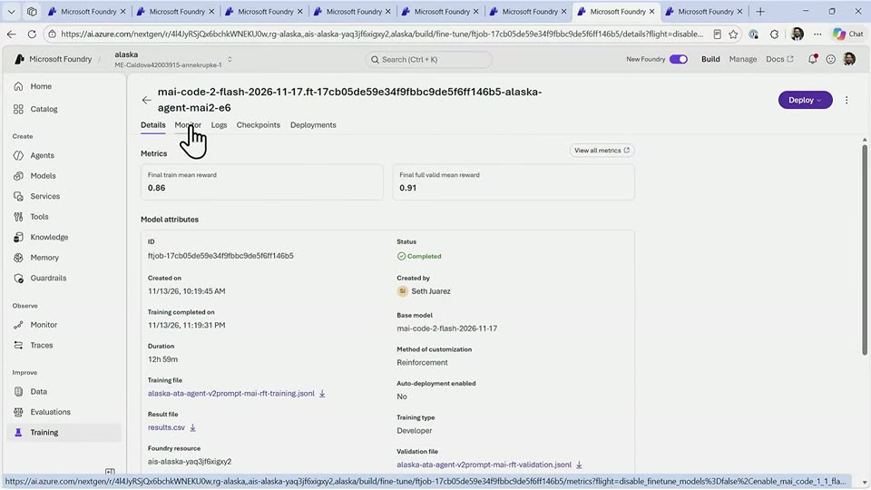<span class="play">▶ 01:33:20</span></a><figcaption>Training job in Foundry</figcaption></figure></div><div class="text"><a class="ts" href="https://www.youtube.com/watch?v=ZR4v1c4CClc&t=5273s" target="_blank" rel="noopener">▶ 01:27:53</a><h3>Alaska Airlines: ATA maintenance-code agent</h3><ul>
<li>An agent suggests precise ATA codes from maintenance text, and the engineer always confirms. Traces, a rubric-based eval <a class="ts" href="https://www.youtube.com/watch?v=ZR4v1c4CClc&amp;t=5468s" target="_blank" rel="noopener">▶ 01:31:08</a>, then <strong>Foundry optimizer</strong> rewrites the prompt and tool descriptions.</li>
<li>That raised token costs, so they <strong>fine-tuned the model</strong> instead <a class="ts" href="https://www.youtube.com/watch?v=ZR4v1c4CClc&amp;t=5557s" target="_blank" rel="noopener">▶ 01:32:37</a>, reaching about 97% on code match.</li>
</ul></div></section><section class="sec"><div class="media"><figure class="lead"><a href="https://www.youtube.com/watch?v=ZR4v1c4CClc&t=5740s" target="_blank" rel="noopener" aria-label="Watch from 01:35:40: Your weights. Your model.">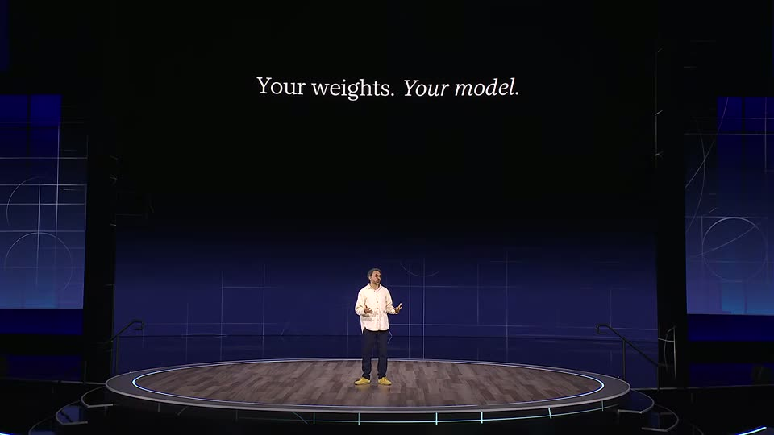<span class="play">▶ 01:35:40</span></a><figcaption>Your weights. Your model.</figcaption></figure><figure class="extra"><a href="https://www.youtube.com/watch?v=ZR4v1c4CClc&t=5900s" target="_blank" rel="noopener" aria-label="Watch from 01:38:20: MAI Cyber 2 Flash &lt;2% cost">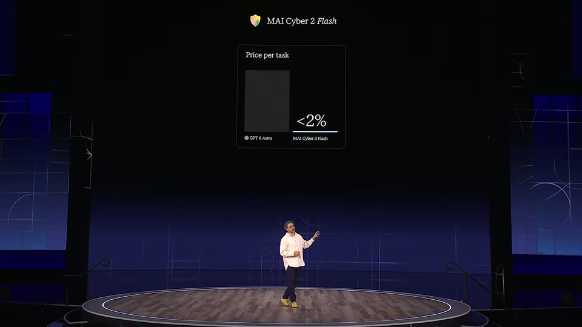<span class="play">▶ 01:38:20</span></a><figcaption>MAI Cyber 2 Flash &lt;2% cost</figcaption></figure></div><div class="text"><a class="ts" href="https://www.youtube.com/watch?v=ZR4v1c4CClc&t=5693s" target="_blank" rel="noopener">▶ 01:34:53</a><h3>MAI models: price/performance and your own weights</h3><ul>
<li>"At frontier prices the math isn't sustainable." The speaker says <strong>MAI Code 2</strong> gets 98% of the performance at 40% of the cost on everyday enterprise coding, and <strong>Code 2 Flash</strong> matches GPT-6 Luna and Haiku 5.5 on everyday tasks at 65% and 20% of their price.</li>
<li><strong>Decision 1.1</strong> handles in-app routing <a class="ts" href="https://www.youtube.com/watch?v=ZR4v1c4CClc&amp;t=5793s" target="_blank" rel="noopener">▶ 01:36:33</a>. The models are explicitly <em>not</em> tuned for very long-horizon agentic work. AT&amp;T's custom model beat 6.1 on 5G tasks at 50x less cost.</li>
<li><strong>MAI Cyber 2 Flash</strong> costs under 2% per task <a class="ts" href="https://www.youtube.com/watch?v=ZR4v1c4CClc&amp;t=5891s" target="_blank" rel="noopener">▶ 01:38:11</a>. <strong>MAI Image 2.7</strong> is said to be the #1 image-editing model at a fifth of the cost. MAI runs in 10M Dragon encounters a month with half the errors.</li>
<li><strong>Models under your control</strong> <a class="ts" href="https://www.youtube.com/watch?v=ZR4v1c4CClc&amp;t=6001s" target="_blank" rel="noopener">▶ 01:40:01</a>: customize a frontier model with your own data, control who has access, and your data stays yours.</li>
</ul></div></section><section class="sec"><div class="media"><figure class="lead"><a href="https://www.youtube.com/watch?v=ZR4v1c4CClc&t=6150s" target="_blank" rel="noopener" aria-label="Watch from 01:42:30: Arthur Sadoun">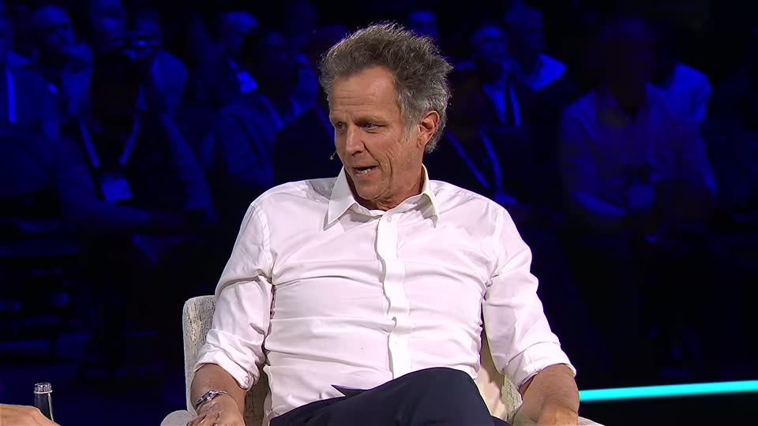<span class="play">▶ 01:42:30</span></a><figcaption>Arthur Sadoun</figcaption></figure></div><div class="text"><a class="ts" href="https://www.youtube.com/watch?v=ZR4v1c4CClc&t=6085s" target="_blank" rel="noopener">▶ 01:41:25</a><h3>Publicis: Arthur Sadoun</h3><p>"I should be dead, and I'm here." Advertising was supposed to be killed by AI, but Publicis has grown to 120,000 people. Its three bets were identity and technology, breaking silos ("no silos, no bozos"), and AI-led. Change management is the real work.</p></div></section></div>
<div class="part" id="p4"><header class="part-head"><p class="eyebrow">[ PART 4 ]</p><h2>Trust</h2></header><section class="sec"><div class="media"><figure class="lead"><a href="https://www.youtube.com/watch?v=ZR4v1c4CClc&t=6520s" target="_blank" rel="noopener" aria-label="Watch from 01:48:40: Agent 365 — Manage">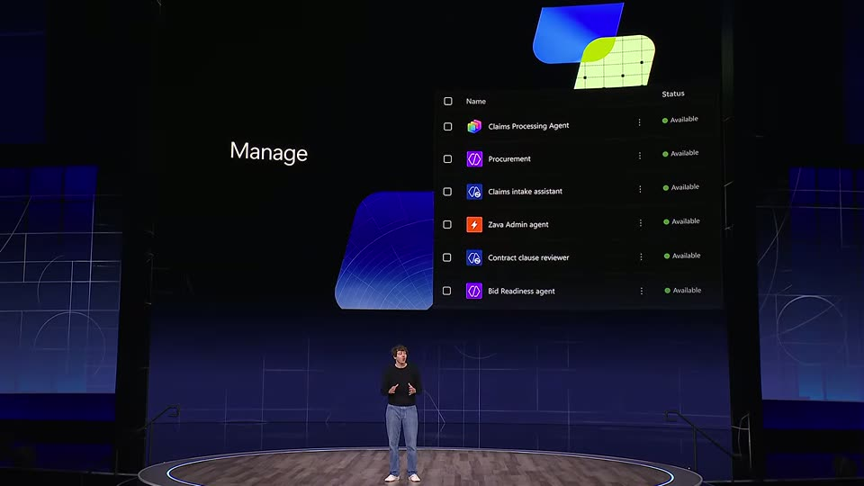<span class="play">▶ 01:48:40</span></a><figcaption>Agent 365 — Manage</figcaption></figure></div><div class="text"><a class="ts" href="https://www.youtube.com/watch?v=ZR4v1c4CClc&t=6445s" target="_blank" rel="noopener">▶ 01:47:25</a><h3>Agent 365: one year on (Charles Lamanna)</h3><ul>
<li>One place to manage, govern, secure and track the cost and value of agents, <strong>across Microsoft and non-Microsoft platforms</strong>: AWS, OpenAI, Anthropic, Databricks, Snowflake and Salesforce.</li>
<li>A registry of agents, plug-ins and skills, plus cost policies. <strong>50M+ agents</strong> are managed <a class="ts" href="https://www.youtube.com/watch?v=ZR4v1c4CClc&amp;t=6571s" target="_blank" rel="noopener">▶ 01:49:31</a>.</li>
</ul></div></section><section class="sec"><div class="media"><figure class="lead"><a href="https://www.youtube.com/watch?v=ZR4v1c4CClc&t=6700s" target="_blank" rel="noopener" aria-label="Watch from 01:51:40: Agent registry and map">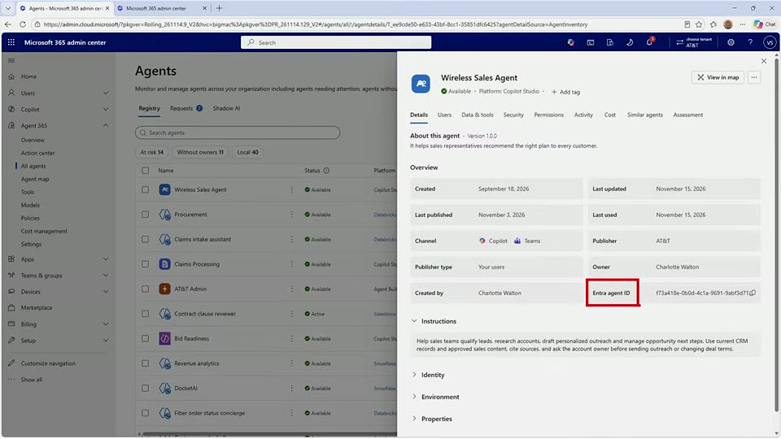<span class="play">▶ 01:51:40</span></a><figcaption>Agent registry and map</figcaption></figure></div><div class="text"><a class="ts" href="https://www.youtube.com/watch?v=ZR4v1c4CClc&t=6618s" target="_blank" rel="noopener">▶ 01:50:18</a><h3>AT&amp;T: 60,000+ agents</h3><ul>
<li>Each agent has its own ID and an agent map that highlights errors. <strong>Action Center</strong> <a class="ts" href="https://www.youtube.com/watch?v=ZR4v1c4CClc&amp;t=6737s" target="_blank" rel="noopener">▶ 01:52:17</a> prioritizes issues and automates cleanup of agents unused for 90 days. "Forgotten agents can become rogue agents."</li>
<li>Cost spikes come with forecasts and spending policies. <strong>Hard limits</strong> for Microsoft agents, and <strong>spending groups</strong> that let the business set budgets <a class="ts" href="https://www.youtube.com/watch?v=ZR4v1c4CClc&amp;t=6774s" target="_blank" rel="noopener">▶ 01:52:54</a>.</li>
</ul></div></section><section class="sec"><div class="media"><figure class="lead"><a href="https://www.youtube.com/watch?v=ZR4v1c4CClc&t=7030s" target="_blank" rel="noopener" aria-label="Watch from 01:57:10: Spend flow by service and model">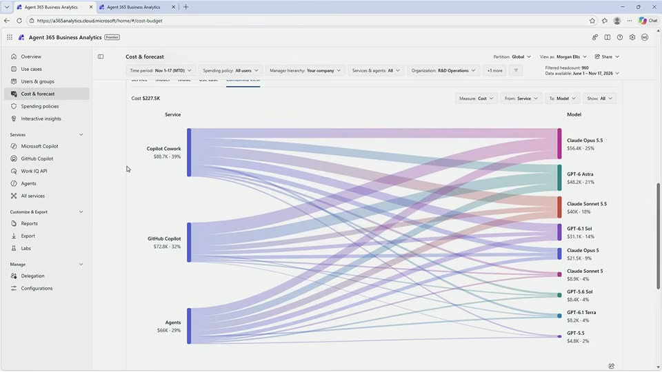<span class="play">▶ 01:57:10</span></a><figcaption>Spend flow by service and model</figcaption></figure></div><div class="text"><a class="ts" href="https://www.youtube.com/watch?v=ZR4v1c4CClc&t=6909s" target="_blank" rel="noopener">▶ 01:55:09</a><h3>Agent 365 Business Analytics</h3><ul>
<li>Spend, adoption and value in one place, measuring "work done, not tokens spent."</li>
<li>Demo <a class="ts" href="https://www.youtube.com/watch?v=ZR4v1c4CClc&amp;t=6981s" target="_blank" rel="noopener">▶ 01:56:21</a>: an R&amp;D leader forecasts spend across Copilot, Cowork and GitHub Copilot, sees use-case value, and tracks costs for agents on Copilot Studio and <strong>Amazon Bedrock</strong>. Then: "see it, forecast it, budget it, charge it back."</li>
<li><strong>Availability</strong> <a class="ts" href="https://www.youtube.com/watch?v=ZR4v1c4CClc&amp;t=7196s" target="_blank" rel="noopener">▶ 01:59:56</a>: frontier public preview today. Delegated spending policies and cost visibility for non-Microsoft agents arrive in <strong>December</strong>.</li>
</ul></div></section><section class="sec"><div class="media"><figure class="lead"><a href="https://www.youtube.com/watch?v=ZR4v1c4CClc&t=7300s" target="_blank" rel="noopener" aria-label="Watch from 02:01:40: Agent 365 security">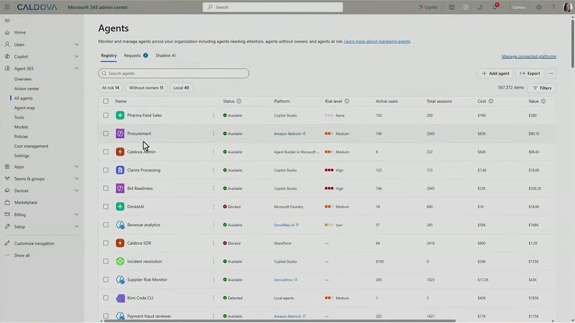<span class="play">▶ 02:01:40</span></a><figcaption>Agent 365 security</figcaption></figure></div><div class="text"><a class="ts" href="https://www.youtube.com/watch?v=ZR4v1c4CClc&t=7272s" target="_blank" rel="noopener">▶ 02:01:12</a><h3>Agent 365 security: local agents</h3><p>Discovers agents running on employee devices (65 types, including OpenClaw), with <strong>dynamic risk</strong> scoring tied to security incidents. It can block agents and flag devices that aren't compliant.</p></div></section><section class="sec"><div class="media"><figure class="lead"><a href="https://www.youtube.com/watch?v=ZR4v1c4CClc&t=7500s" target="_blank" rel="noopener" aria-label="Watch from 02:05:00: Vulnerabilities at machine speed">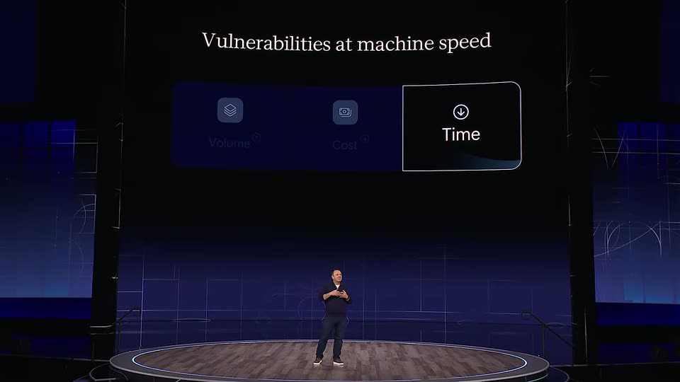<span class="play">▶ 02:05:00</span></a><figcaption>Vulnerabilities at machine speed</figcaption></figure></div><div class="text"><a class="ts" href="https://www.youtube.com/watch?v=ZR4v1c4CClc&t=7396s" target="_blank" rel="noopener">▶ 02:03:16</a><h3>Ales: AI has changed the physics of cyber</h3><ul>
<li><strong>Volume:</strong> Patch Tuesday this month covered 1,000+ vulnerabilities, against fewer than 100 in March (10x).</li>
<li><strong>Cost:</strong> high-quality vulnerabilities that bounty programs pay about $300K for can be found for under $5 with AI.</li>
<li><strong>Time:</strong> the gap from discovery to exploitation is approaching zero, and coordinated disclosure is collapsing.</li>
<li>The stack <a class="ts" href="https://www.youtube.com/watch?v=ZR4v1c4CClc&amp;t=7506s" target="_blank" rel="noopener">▶ 02:05:06</a>: Defender, Entra, Purview and Sentinel as sensors and actuators, with 165 trillion signals a day turned into security context for agents.</li>
</ul></div></section><section class="sec"><div class="media"><figure class="lead"><a href="https://www.youtube.com/watch?v=ZR4v1c4CClc&t=7720s" target="_blank" rel="noopener" aria-label="Watch from 02:08:40: Perception playbooks">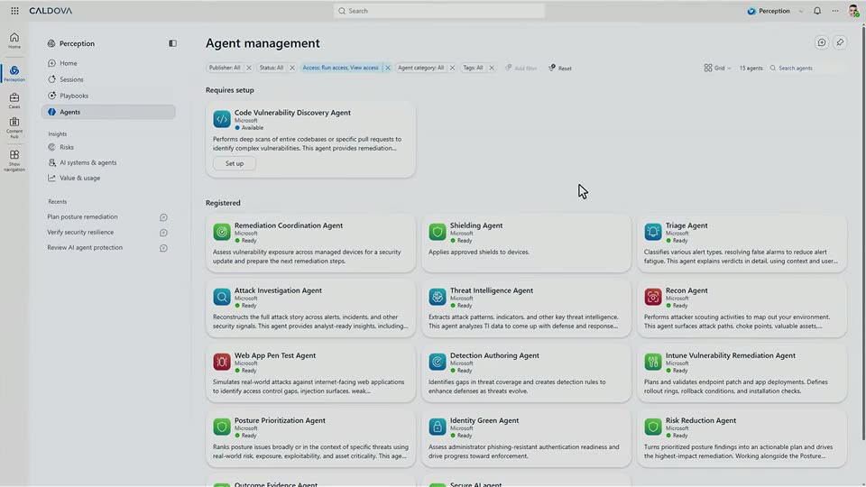<span class="play">▶ 02:08:40</span></a><figcaption>Perception playbooks</figcaption></figure><figure class="extra"><a href="https://www.youtube.com/watch?v=ZR4v1c4CClc&t=7920s" target="_blank" rel="noopener" aria-label="Watch from 02:12:00: Perception vulnerability session">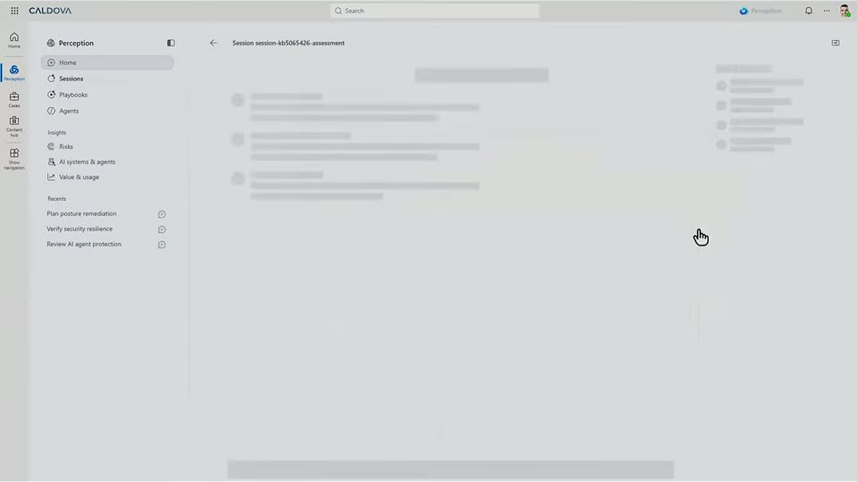<span class="play">▶ 02:12:00</span></a><figcaption>Perception vulnerability session</figcaption></figure></div><div class="text"><a class="ts" href="https://www.youtube.com/watch?v=ZR4v1c4CClc&t=7647s" target="_blank" rel="noopener">▶ 02:07:27</a><h3>Perception demo: David Weston</h3><ul>
<li>Blue, red and green agent teams, custom <strong>playbooks</strong> with upfront cost estimates and triggers, and a <strong>FinOps dashboard</strong> that feeds into Agent 365.</li>
<li>Ales <a class="ts" href="https://www.youtube.com/watch?v=ZR4v1c4CClc&amp;t=7797s" target="_blank" rel="noopener">▶ 02:09:57</a>: MAI Cyber 2 is "better than GPT-6 Astra at 2% of cost per task."</li>
<li>Engineer workflow <a class="ts" href="https://www.youtube.com/watch?v=ZR4v1c4CClc&amp;t=7870s" target="_blank" rel="noopener">▶ 02:11:10</a>: an actively exploited Patch Tuesday CVE across 52,000 devices is expedited and covered by the new <strong>endpoint shield</strong>. Alerts are triaged automatically, including from Okta data, and new detections are written and published with one click <a class="ts" href="https://www.youtube.com/watch?v=ZR4v1c4CClc&amp;t=8064s" target="_blank" rel="noopener">▶ 02:14:24</a>.</li>
</ul></div></section><section class="sec nofig"><div class="media"></div><div class="text"><a class="ts" href="https://www.youtube.com/watch?v=ZR4v1c4CClc&t=8143s" target="_blank" rel="noopener">▶ 02:15:43</a><h3>Agents as insiders</h3><p>Agents are often overprivileged and increasingly autonomous. Perception and Agent 365 share context so they can secure agents "at machine speed."</p></div></section><section class="sec"><div class="media"><figure class="lead"><a href="https://www.youtube.com/watch?v=ZR4v1c4CClc&t=8250s" target="_blank" rel="noopener" aria-label="Watch from 02:17:30: Leigh-Ann Russell, BNY"><span class="play">▶ 02:17:30</span></a><figcaption>Leigh-Ann Russell, BNY</figcaption></figure></div><div class="text"><a class="ts" href="https://www.youtube.com/watch?v=ZR4v1c4CClc&t=8195s" target="_blank" rel="noopener">▶ 02:16:35</a><h3>BNY: Leigh-Ann Russell (CIO)</h3><ul>
<li>"Build governance and security in at the heart — that's how you scale fast."</li>
<li>A <strong>market first:</strong> a Microsoft agent and a BNY agent negotiated a trade through an agentic negotiation protocol, with a human "over the loop" and a human making the final decision <a class="ts" href="https://www.youtube.com/watch?v=ZR4v1c4CClc&amp;t=8286s" target="_blank" rel="noopener">▶ 02:18:06</a>.</li>
<li>In the Perception preview, her team works "in AI time, not human time." Her themes are coherence, intent, integrity, infrastructure and impact. "Trust is the project" <a class="ts" href="https://www.youtube.com/watch?v=ZR4v1c4CClc&amp;t=8427s" target="_blank" rel="noopener">▶ 02:20:27</a>.</li>
</ul></div></section></div>
<div class="part" id="p5"><header class="part-head"><p class="eyebrow">[ CLOSE ]</p><h2>Judson Althoff</h2> <a class="ts" href="https://www.youtube.com/watch?v=ZR4v1c4CClc&t=8470s" target="_blank" rel="noopener">▶ 02:21:10</a></header><section class="sec"><div class="media"><figure class="lead"><a href="https://www.youtube.com/watch?v=ZR4v1c4CClc&t=8520s" target="_blank" rel="noopener" aria-label="Watch from 02:22:00: What&#x27;s your biggest ambition?"><span class="play">▶ 02:22:00</span></a><figcaption>What&#x27;s your biggest ambition?</figcaption></figure></div><div class="text"><ul>
<li>Kids' ambition posters: "nowhere do you see the words <em>prompt engineer</em>." People want AI in the canvases they already use.</li>
<li>"Intelligence must compound from within … it's about your IQ" <a class="ts" href="https://www.youtube.com/watch?v=ZR4v1c4CClc&amp;t=8565s" target="_blank" rel="noopener">▶ 02:22:45</a>. On trust: "the only way to gain trust is through observability."</li>
<li>"Microsoft is the adult in the room" <a class="ts" href="https://www.youtube.com/watch?v=ZR4v1c4CClc&amp;t=8674s" target="_blank" rel="noopener">▶ 02:24:34</a>. "Technology doesn't have ambitions, people do."</li>
</ul></div></section></div>
  </div>
</main>

<footer>
  <div class="wrap">
    <p style="margin:0">Notes on the <a href="https://www.youtube.com/watch?v=ZR4v1c4CClc" target="_blank" rel="noopener">Microsoft Ignite 2026 opening keynote</a>, written from the official captions and slides. Product names follow the captions. Figures and claims are as stated on stage.</p>
    <p style="margin:0">Summary prepared November 2026. Not an official Microsoft publication.</p>
  </div>
</footer>
